The realm of North Africa and Southwest Asia is large and expansive in terms of physical area, but its regions share a number of common qualities. The physical area of this realm is divided into three regions: North Africa, Southwest Asia, and the countries of TurkestanAlternative term for the region of Central Asia named after the Turkish people who moved through the area centuries ago. (the geographic region of Central Asia). The countries in the North African region include the countries bordering the Mediterranean Sea and the Red Sea from Morocco to Sudan. The realm borders the Atlantic Ocean, the Sahara Desert, and the African Transition Zone. Egypt has territory in both Africa and Asia through its possession of the Sinai Peninsula. The second region, Southwest Asia, includes Turkey, Iran, the Middle East, and the Arabian Peninsula. The land on the eastern shores of the Mediterranean Sea is frequently referred to as the LevantLand area bordering the eastern Mediterranean Sea that now includes Israel, Lebanon, and parts of western Syria. and is often included as a part of the Middle East. Technically, the term Middle East only includes the five countries of Israel, Lebanon, Jordan, Syria, and Iraq, but in common practice Middle East refers to all of Southwest Asia. Central Asia, also referred to as Turkestan, includes the “stan” countries from Kazakhstan to Afghanistan in the region between China and the Caspian Sea. The suffix stan, meaning “land of,” is a common suffix for country names in Central Asia. Afghanistan is the only country of Central Asia that was not officially a part of the former Soviet Union.
The Middle East—a European term that bridges the Near EastRegion of present-day Turkey. and the Far EastGeneral European term for the regions of Asia including India and China.—can also be defined as the area between the Mediterranean Sea and the Persian Gulf. Turkey, with its focal point of Istanbul, has been considered part of the Near East by Europeans. The famous Agatha Christie novel Murder on the Orient Express was about a train that traveled between Paris and Istanbul. The word orient refers to the east; occident refers to the west. Because Turkey was referred to as the Near East and India and China were the Far East, the region in between became the Middle East. This term is not entirely accurate but is widely used to refer to Southwest Asia.
Three small countries in the Caucasus Mountains—Georgia, Azerbaijan, and Armenia—are affiliated with this realm through their geographic location and their histories. They are technically European countries and were once part of the former Soviet Union. The details of these countries are covered in Chapter 1 "Introduction to the World". Turkey, which has territory in both Europe and Asia, was historically referred to as Asia MinorThe ancient region that is present-day Turkey. because most of its land mass is in Asia. The portion of Turkey that lies to the west of Istanbul is on the European continent, which connects Turkey with the European community. Cyprus is a small island in the eastern Mediterranean that has ties to Turkey and a historical connection to the Middle East. Cyprus is technically a European country and is a member of the European Union. Bordering both Iran and China is Afghanistan, which has been a transitional country in the pages of history. Many empires have conquered it, and many groups have fought over its territory. Today, Afghanistan is a key country in the globalization process because of its huge mineral reserves, yet it has a volatile and unstable political scene.
Sudan, a country geographically located in Africa, is included in this realm because it shares similar traits with the rest of the realm’s three regions. Sudan could also be studied with East Africa. The African Transition Zone cuts across Sudan and extends through the widest part of the African continent. The African Transition Zone creates a boundary for the realms of North Africa and Southwest Asia dividing the Islamic influence to the north from the Christian influence to the south. It is also a transitional boundary between the dry and arid type B climates and the more tropical type A climates of Equatorial Africa. The countries on the eastern end of the African Transition Zone—including Eritrea, Somalia, and Ethiopia—are often covered with this realm in other contexts, but in this textbook, the critical information was included in the section on East Africa (Chapter 7 "Subsaharan Africa", Section 7.5 "East Africa"). The African Transition Zone can be volatile, with the potential for ethnic, cultural, or political conflicts.
Figure 8.1 The Regions of North Africa, Southwest Asia, and Turkestan

The African Transition Zone is the southern boundary of the realm.
Source: Map courtesy of University of Texas Libraries, http://www.lib.utexas.edu/maps/world_maps/world_pol_2011.pdf.
The countries of the realm share three key dominant traits that influence all other human activities. The first key common trait relates to the climate of the region. Though various climate types can be found in this realm, it is the dry or arid type B climate that dominates and covers most of the physical area. Other climate types include the type H highland climate (cold temperatures at the high elevations with moderate temperatures at the bases) of the mountains of the Maghreb, Iran, or Central Asia and the more moderate type C climate in the coastal regions bordering the sea. The type C climate along the coastal Mediterranean area attracts human development and is home to many large port cities. The overall fact is that vast areas of each region are uninhabited desert. North Africa has the largest desert in the world—the Sahara—which borders the Libyan Desert and the Nubian Desert. About one third of the Arabian Peninsula is part of the Empty Quarter of the Rub’ al Khali (Arabian Desert). Kazakhstan, Uzbekistan, and Turkmenistan have vast regions of desert with few if any inhabitants. This aspect of the realm reveals the importance of water as a valuable natural resource. Most people in the realm are more dependent on the availability of water than on the availability of oil.
The second trait is Islam: most of the people in the realm are Muslims. The practice of Islam in day-to-day life takes different forms in the various divisions of the religion. The differences between the divisions have contributed to conflict or open warfare. Islam acts as more than just a religion. It also serves as a strong cultural force that has historically unified or divided people. The divisive nature of the religion has often resulted in serious political confrontations within the realm between groups of different Islamic ideologies. Concurrently, the religion of Islam is also a unifying force that brings Muslims with similar beliefs together with common bonds. Islam provides structure and consistency in daily life. The faith can provide comfort and a way of living. The holy cities of Mecca and Medina are located in Saudi Arabia. Other holy cities for other divisions of Islam include Jerusalem and the two cities holy to Shia Muslims: Karbala and Najaf in Iraq. Islam dominates the realm, but other religions are significant in various regions. Israel is a Jewish state, and Christianity is common in places from Lebanon to Egypt. There are also followers of the Baha’i faith, Zoroastrianism, and groups such as the Druze, just to name a few.
The third factor that all three regions of the realm share is the availability of significant natural resources. North Africa, Southwest Asia, and Turkestan all have significant reserves of oil, natural gas, and important minerals. It stands to reason that not every country has the same reserves and that some of the countries have very few or none at all. However, in terms of how the countries gain national wealth, it is the export of oil that has dominated the economic activity as it relates to the global community. This realm is a peripheral realm. The resource that the realm can offer to the core economic regions of the world is the energy to fuel their economies and maintain their high standard of living. Enormous economic profits from the sale of these resources have traditionally been held in the hands of the elite ruling leader or his clan and do not always filter down to most of the population. The control of and profits from natural resources have become the primary objectives of the countries; this fuels conflicts and armed military interventions in areas such as Iraq and Afghanistan.
Availability and control of fresh water have typically resulted in the ability of humans to grow food crops and expand their cultural activities. Hunter-gatherer groups did not settle down in one area but were more nomadic because of their seasonal search for food. As humans developed the ability to grow crops and provide enough food in one place, they no longer needed to move. The earliest human settlements sprang up in what is the present-day Middle East. Early human settlements provide some indication of early urbanization patterns based on the availability or surplus of food. The shift to permanent settlements included the domestication of livestock and the production of grain crops. Fruits and vegetables were grown and harvested domestically. The activities of this era created humanity’s earliest version of the rural-to-urban shift associated with the Industrial Revolution or present development. It is theorized that the ability to grow excess food provided the time and resources for urbanization and the establishment of organized communities, which often progressed into political entities or regional empires.
It has been estimated that some of the earliest cities in the world—Jericho, for example—were first inhabited around 10,000 BCE in the Middle East. In the same region, two cultural hearthsRegion or area where an early human civilization began. provide significant historical value to the concept of human development: MesopotamiaThe “land between rivers,” referring to the land between the Tigris and Euphrates Rivers. and the Nile Valley in Egypt. Both areas were settings for the growth of human civilization and are still being examined and studied today. In Mesopotamia, a remarkable human civilization emerged along the banks of the Tigris and Euphrates Rivers in what is present-day Iraq, Syria, and southern Turkey. The climate, soils, and availability of fresh water provided the ingredients for the growth of a human civilization that is held in high esteem because of its significant contributions to our human history.
Figure 8.2 Head of Gudea, Sumerian Ruler from Mesopotamia, Circa 2121 BCE
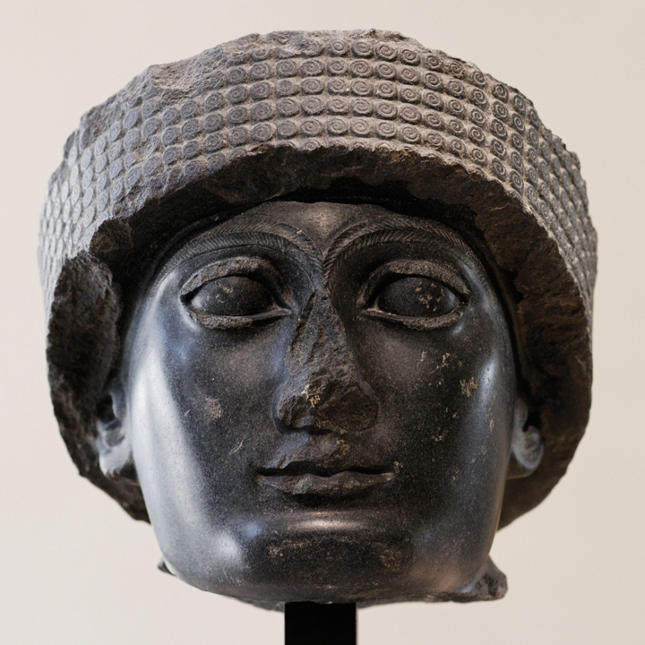Source: Photo courtesy of Marie-Lan Nguyen, http://en.wikipedia.org/wiki/File:Head_Gudea_Louvre_AO13.jpg.
Mesopotamia, meaning “land between rivers,” is located between the Tigris and Euphrates Rivers. Neolithic pottery found there has been dated to before 7000 BCE. Humans in this area urbanized as early as 5000 BCE. People were settling in the Mesopotamia region, building magnificent cities, and developing their sense of human culture. Mesopotamia gave rise to a historical cradle of civilizationThe location where early human settlements developed into long-term cultures with prominent advancements. that included the Assyrian, Babylonian, Sumerian, and Akkadian Empires, all established during the Bronze Age (about 3000 BCE or later). Famous cities such as Ur, Babylon, and Nineveh were located in the Mesopotamia region. The control of water and the ability to grow excess food contributed to their success. They developed extensive irrigation systems. Large grain storage units were necessary to provide the civic structure and to develop a military to protect and serve the city or empire. The human activity in this area extended around the region all the way to the Mediterranean Sea, which is where the term Fertile CrescentThe region of Mesopotamia and the Levant where early human civilization flourished. comes from.
Figure 8.3 The Two Main Cultural Hearths in the Realm: Mesopotamia and the Fertile Crescent in Asia and Upper and Lower Egypt in Africa
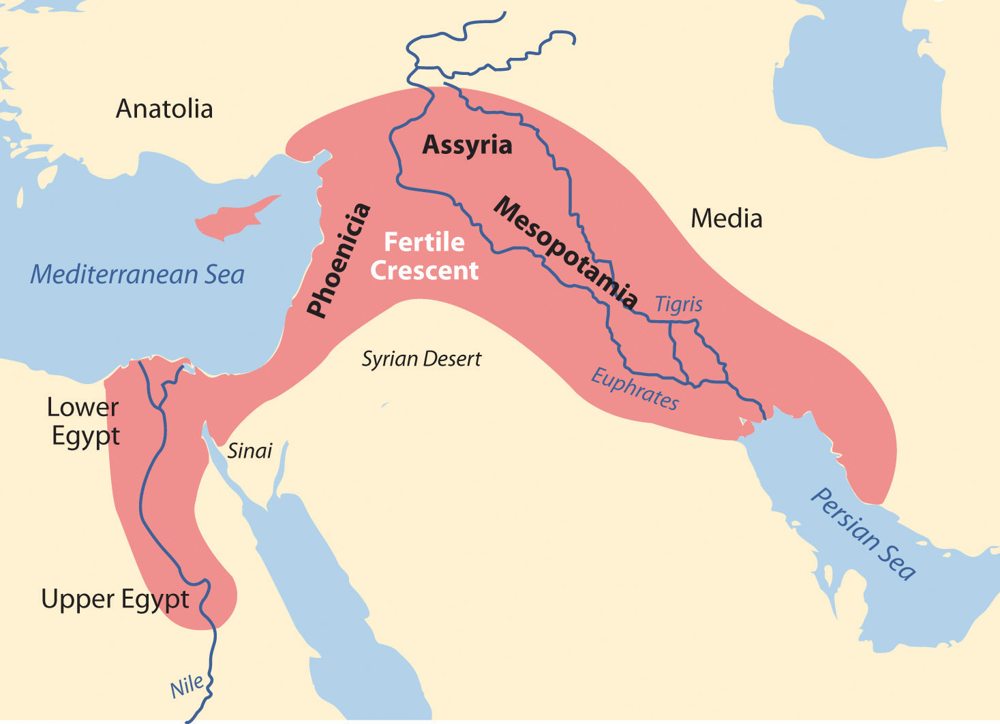Various ancient groups were well established on the eastern side of the Fertile Crescent along the Mediterranean coast. The cities of Tyre and Sidon were ports and access points for trade and commerce for groups like the Phoenicians who traded throughout the Mediterranean. Ancient cities such as Damascus and Jericho became established in the same region and were good examples of early human urbanization during the Bronze Age. These cities are two of the oldest continually inhabited cities in the world.
Human civilization also emerged along the Nile River valley of what is now Egypt. The pyramids and the Sphinx in the Giza Plateau just outside Cairo stand testimony to the human endeavors that took place here. Spring flooding of the Nile River brought nutrients and water to the land along the Nile Valley. The land could produce excess food, which subsequently led to the ability to support a structured, urbanized civilization. The Nile River is the lifeblood of the region. In the fifth century BCE, the ancient Greek historian Herodotus suggested that Egypt was “the gift of the Nile.” The dating for the beginning of the civilization along the Nile River is often in question, but Egyptologists estimate the first dynasty ruled both Upper and Lower Egypt around 3100 BCE. Upper Egypt is in the south and Lower Egypt is in the north because the Nile River flows north. The terms “Upper” and “Lower” refer to elevation. Geologists, using the erosion patterns of the Sphinx, estimate that it was constructed about 10,000 BCE. The ability of humans to harness the potential of the environment set the stage for technological advancements that continue to this day. The Egyptian civilization flourished for thousands of years and spawned a legacy that influenced their neighbors in the region, who benefited from their advancements.
The human activities that created the civilizations in Mesopotamia and along Egypt’s Nile River gave humanity a rich heritage to help us understand our history. Many of our legends, stories, and myths have their origins in these cultures. Their cultural developments provided the basis for much of the Western world’s religious beliefs and early philosophical ideas. The engineering feats needed to create the magnificent temples and pyramids have by themselves been studied and analyzed over the centuries to give modern scientists and scholars a reason to pause and recognize the high level of organization and structure that must have gone into developing and managing these civilizations. Various aspects of science and the arts were being developed by these ancient people. Writing, mathematics, engineering, and astronomy were becoming highly advanced. Artifacts such as clay tablets and hieroglyphs are still being discovered and interpreted and shed additional light on the advancements of these civilizations and their contribution to our collective human civilization.
Water is one of the necessities for human existence, and human settlements have long been based on the availability of water for human consumption and agriculture, navigation, and the production of energy. In North Africa and Southwest Asia, the availability of water has an even greater relevance because of the dominant type B climate. Methods used to address the shortage of water or to access fresh water have been nearly as diverse as the people who live here. Large populations of people can be found wherever there is fresh water. Water has historically been transferred from source to destination through canals, aqueducts, or special channels. Many ruins of extensive aqueducts from Roman times and earlier remain throughout the realm. The issues associated with water use continue to affect the lives of the people of this realm. Rapid population growth and industrialization have intensified the demand for fresh water.
Figure 8.5 Roman Aqueduct Near Caesarea
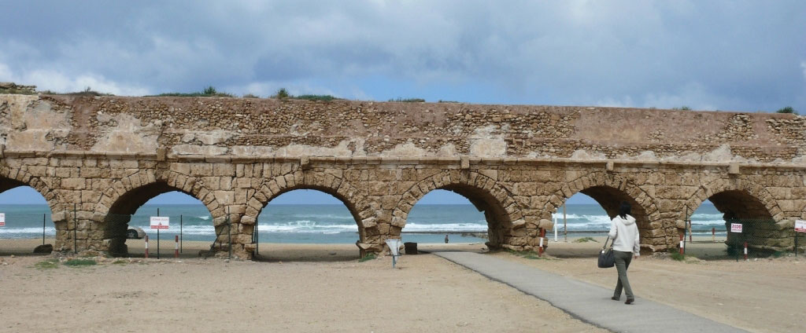Source: Photo by R. Berglee.
Water can be found in the desert regions in a range of forms. For example, there are oases, springs, or noted wells from which people can draw underground water that is close to the surface. Mountainous regions such as the Atlas Mountains in North Africa or the Elburz Mountains in Iran trap moisture, which produces higher quantities of precipitation. The precipitation is then available in the valleys to irrigate crops. Discovering or developing other methods of acquiring fresh water is a requirement in areas without mountains.
In the Sahara region, Libya draws water from deep underground wells that tap into the vast aquifers beneath the desert that were charged with water when the region was tropical thousands of years ago. The water is referred to as fossil water. Extensive systems of canals and pipelines have been developed in Libya to extract fossil water and use it for agricultural production or for urban purposes. The man-made river project, one of the largest of its kind, has drawn fresh water from the desert to large cities such Tripoli and Benghazi. The local drinking water in Benghazi is contaminated by saltwater intrusion from the Mediterranean. Underground aquifers are underneath political boundaries, so the allocation and control of water are matters of political debate with the potential to lead to military conflict. The project’s potential duration will be a function of how quickly the water is used and how many people use the aquifer system. The main problem with this system is that underground aquifers are not considered a renewable resource; as more countries tap into the aquifers, the available water will be depleted more quickly. As water is drawn from the aquifers for industrial irrigation, the water table goes down. Local settlements that rely on well water may in time have to dig deeper wells or move to locations where water resources are still available.
Egypt draws water from the Nile to irrigate fields for extensive food production. For thousands of years, floods of the Nile annually covered the land with fresh silt and water. This made the land productive, but the flooding often caused serious damage to human infrastructure. The building of the Aswan High Dam in the 1970s helped control the flooding of the Nile Valley. The river no longer flooded annually, and water had to be pumped onto the land. Over time, the constant and extensive use of this type of irrigation causes the small quantities of salt in the water to build up in the soil to serious levels, thereby reducing the land’s productivity. This process, called salinizationThe buildup of salts in soils that have been heavily irrigated over the years, typically in arid climates., is a common problem in arid climates. To rid the soil of the salts, fresh water is needed to flood the fields, dissolving the salt and then moving the salty water back off the fields. High salinization in the soil and the reduction in agricultural productivity is a growing concern for Egypt. Egypt’s growing population places a high demand on the availability of food. More than half of the eighty million people in Egypt live in rural areas, and many of them make their living in agriculture, growing food that plays a critical role in the country’s economic stability
The major source of water in the Fertile Crescent region comes from the Tigris and Euphrates rivers. Both have their origins in Turkey and converge at the Shatt al-Arab waterway that flows into the Persian Gulf. The Euphrates is the longest river in Southwest Asia and flows through Syria from Turkey before entering into Iraq. Turkey had developed large dams on both the Tigris and Euphrates for agricultural purposes and to generate hydroelectric power. As water is diverted for agriculture in Turkey there is less water flowing downstream for Syria or Iraq. Disputes over water resources continue to be a major concern in the Tigris-Euphrates Basin. The Atatürk Dam in Turkey is largest dam on the Euphrates, and it has a reservoir behind the dam that is large enough to hold the total annual discharge of the river. All three countries have dams on the Euphrates and both Turkey and Iraq have dams on the Tigris. The three countries signed a memorandum of understanding in 2009 to strengthen cooperation within the Tigris-Euphrates Basin. All three countries need the water for agriculture to produce food for a growing population. Agreements to share water have been difficult as a result of the Iraq War and the recent protests and demonstrations in Syria that have contributed to further political tension between the three countries.
Israel has taken innovative steps to conserve water and use it efficiently. Drip irrigation mixed with fertilizers is called fertigationSystem of drip irrigation mixed with fertilizers used in Israel.. Fertigation is used extensively in the area. Israel grows plantation crops such as bananas, which require large quantities of water. Banana groves are covered with material that allows sunlight to penetrate but reduces the amount of transpiration, which conserves water. Israel has worked to recycle water whenever possible. Gray water is water extracted from sewage that has been treated to be used in agriculture. Underground wells in the West Bank region provide water for a high percentage of people in both the Palestinian areas and Israel. The issue of control over the water is contentious at times. Just as the control of water may have been an important factor in the early Mesopotamian civilizations, it remains a point of political conflict in places such as Israel and the West Bank. The lack of fresh water and the heavier demand placed on water resources have caused countries that can afford it to desalinize seawater. This process is used extensively in the oil-rich states of the Arabian Peninsula. Israel is implementing a similar plan to accommodate their increasing population and fresh water requirements.
Figure 8.6 Banana Grove in Israel Near the Lebanese Border

The grove is covered with material that allows sunlight to penetrate but helps reduce the loss of water through transpiration.
Source: Photo by R. Berglee.
Iran is largely a desert climate; thus most of the country does not receive copious amounts of precipitation. In an effort to redistribute the water available from the high mountains, Iranians have developed a system of qanatsSystem of shafts or wells along a mountain slope that allows water to collect into a common underground channel, which is then diverted to wherever it is needed. to collect water where it is available and channel it to the cities or urban areas for use. A qanat might include a system of shafts or wells along a mountain slope that allows water to collect into a common underground channel, which is then diverted to wherever it is needed. This system has been in use since ancient times in many arid regions of the realm and around the world. More than 2,700 years ago, a qanat was developed in what is present-day Iran. The qanat has a system of hundreds of wells and channels water for more than twenty-eight miles; it still provides drinking water to more than forty thousand people in the city of Gonabad. Thousands of qanats were developed over the centuries in this area. Persians used cold qanat water from the mountains to keep ice cool during the summer months. Agricultural production relies heavily on water from qanats, which in turn are dependent on climate conditions and local weather patterns.
The Arabian Peninsula almost always conjures up images of desert conditions; contrary to that image, there is water in the peninsula. Underground aquifers of fossil water are located beneath the sands similar to that in the Sahara Desert. Saudi Arabia taps into these water resources to irrigate agricultural land to grow food. This area faces the same issue as Libya and other areas of the world that rely on underground aquifers: eventually the water supply will be used up. The majority of the Arabian Peninsula is desert and water is always in short supply. Many coastal desert countries such as the United Arab Emirates (UAE), Bahrain, and Qatar have resorted to the desalinization of seawater for their needs, but this is viable only as long as the country can afford the energy cost required to operate the desalinization plants.
Yemen is a state on the Arabian Peninsula that is mountainous and has used terracing to more effectively benefit from what little precipitation they receive. Water from precipitation is trapped in terraces, and as it flows down the mountainside, each terrace uses what it needs and then passes the water to the next lower terrace. More land can be farmed to produce higher yields of agricultural crops such as sorghum and cereals. One of the main problems with Yemen’s terrace system is that most of its trees are being cut down for firewood. Tree roots are essential for holding the soil together on the fragile mountain slopes. Another problem is heavy rains that cause serious erosion and damage to the terrace system. Additionally, the extremely rapid growth rate of Yemen’s population is outstripping its agricultural production.
Fresh water is in short supply in many of the desert regions of Turkestan in Central Asia. Agricultural production has traditionally been dependent on water flowing in rivers and streams that originated with the precipitation from the mountains, but as humans have developed canals and irrigation systems, water from rivers has been diverted for agricultural use. Vast fields of cash crops such as cotton were developed during the Soviet era for economic reasons, and as discussed in more detail in Section 8.7 "Central Asia and Afghanistan", the result had devastating consequences for the Aral Sea, which depended on the water from these rivers for its survival. More than half the population of Central Asia depends on agriculture for their livelihood. The other half, of course, requires water and food for their existence.
Figure 8.7 Precipitation Patterns for North Africa and Southwest Asia
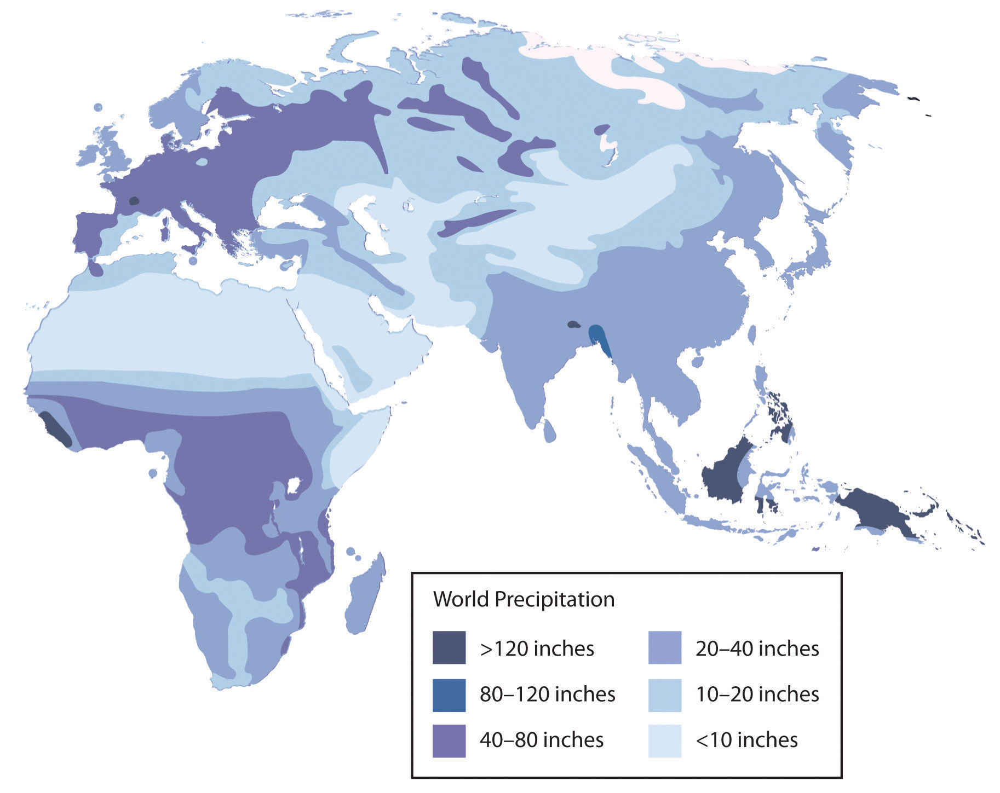The year 2011 brought about important changes for the human geography of parts of this realm. The year ushered in a wave of human activity that awakened the power of the citizens to speak out against conditions in their country and actively protest against their governments. North Africa, the Middle East, and the Arabian Peninsula experienced the highest levels of protests and insurgency. Political leaders that had been in power for extended periods were challenged and removed from office. Democratic reforms were requested or demanded by citizens seeking more individual freedom and greater access to political power. Uprisings in some of the countries were internal; other countries received external support or intervention. Overall, demonstrations, protests, and outright revolution involved millions of people desiring improved living conditions and a better future for themselves and their families.
Protests emerged in North Africa in the beginning of 2011. Tunisia was the first country in which leadership felt the heat of civil resistance and open revolution. In January, the Tunisian president of more than twenty-three years was forced to flee to Saudi Arabia. In Egypt, millions of protesters demonstrated in the streets against political corruption and the lack of reforms. The revolution of Egypt’s citizens was not an armed conflict, but it was an effective protest, because it eventually brought about the ouster of President Hosni Mubarak, who had been in office for almost thirty years. Demonstrations and protests continued against governments in Morocco and Algeria; the people voiced their concerns regarding issues such as high unemployment, poor living conditions, and government corruption. Libya’s protests erupted into a full-scale armed revolution as antigovernment rebels took control of the city of Benghazi in an attempt to topple Muammar Gadhafi’s forty-two years of authoritarian control of the government, oil revenues, and the people. The armed Libyan revolution was eventually successful in taking control of Tripoli and in removing Gadhafi and his family from power. The revolution in Libya was aided by North Atlantic Treaty Organization (NATO) air strikes and the implementation of a no-fly zone over the country.
The ripple effect that the Tunisian revolution had on North Africa was felt on the Arabian Peninsula in places such as Yemen and Bahrain. Mass public demonstrations in Yemen over government corruption, economic conditions, and high unemployment escalated into serious armed conflicts between government troops and opposition factions that wanted the president removed from office. In Bahrain, the protests and demonstrations were centered on the request for more personal freedoms and a greater role in leadership for the Shia population, who experienced discrimination by the Sunni-dominated government. Protests also occurred in Oman for greater reforms.
The Middle East did not escape the Arab Spring of 2011. Protests in Jordan forced King ‘Abdullah II to reorganize his government. Israel and Lebanon were not as affected, as they have been addressing many of these issues on an ongoing basis. The country experiencing the greatest impact was Syria. Major mass demonstrations and serious protests against the government were staged in a number of cities across the country. In Syria, the long-term leadership of an Alawite minority continues to run the government and control the military. The al-Assad family—a father and then his son—has ruled Syria since 1971. The Syrian government has cracked down on the revolution with hard-line measures aimed at subduing the protests and demonstrations. By September 2011, more than two thousand protesters had been killed in Syria, and many more were detained or tortured. Countless others have tried to flee to neighboring countries for their safety. The protesters in Syria want democratic reforms as well as the end of the al-Assad family reign.
Other parts of the realm also felt the effects of the Arab Spring of 2011 with mixed results. Iran has had similar protests and demonstrations in past years, but there was not a major revolution or uprising as a direct result of the Arab Spring. Iran is not an Arab country but has experienced ongoing political friction between citizen factions and the government. The wars in Iraq and Afghanistan have tempered or isolated internal protests or revolutionary activities in those countries even though armed conflicts continue. Various Central Asian states have been working through similar issues but either have not had mass demonstrations or have not received the attention of news media regarding their situations. The wave of change that swept over the realm in the Arab Spring of 2011 is an example of how centripetal and centrifugal cultural forces act on a state or region. The political landscape was altered or drastically changed in many countries. The impact of these changes will be realized in the years and decades to come.
Identify the following key places on a map:
Located in the mountains of western Saudi Arabia, the city of Mecca (also spelled Makkah) began as an early trade center for the region and a hub for camel caravans trading throughout Southwest Asia and North Africa. Mecca is about forty-five miles from the Red Sea coast at an elevation of 531 feet. South of Mecca, the mountains reach more than 7,200 feet in elevation. According to Islamic tradition, the patriarch Abraham came to Mecca with his Egyptian wife Hagar and their son Ishmael more than two thousand years before the birth of the Prophet Muhammad (born 571 CE). When Hagar died, Abraham and Ishmael built the Kaaba (or Ka‘ba), a rectangular shrine that included a special stone, in Mecca. The shrine was destined to become one of the holiest sites for nomadic groups in Arabia. Abraham later died in Palestine in what is now the country of Israel. Centuries after Abraham’s death, the Kaaba and the rituals associated with it deteriorated and mixed with other local traditions.
The traditional groups in the region of Arabia were polytheistic and worshiped their own gods. By the time of Muhammad, Mecca is said to have been a center of worship to more than 360 deities or gods; the greatest of these was Allah (meaning “the god”). Allah was known as the chief of the Meccan pantheon of gods and was worshiped from southern Syria to Arabia. Mecca was full of idols, temples, and worship sites. Tradition states that the god Allah was the only god without an idol; he would become the sole entity of Muhammad’s new Islamic religion.
Muhammad, born in Mecca 571 years after the birth of Christ and about 100 years after the fall of the Roman Empire, was orphaned at an early age, and was employed in a camel caravan when he reached his teens. His life and what has been reported about it changed the Middle East forever. Muhammad traveled throughout the region with the camel caravans. He was fortunate to have been able to live as he did, because most orphans in the region did not have many opportunities in life. His travels introduced him to many people, places, and issues. His situation changed when Muhammad and a widow many years his senior were married. Muhammad became a merchant, the leader of a camel caravan, and a respected member of his community. He was reported to have been intelligent and a wise businessman.
The traditional groups that traded in Mecca held many different religious beliefs. The city was a forum for the many vices and activities associated with trade, travel, and metropolitan business. To escape the activities of Mecca, Muhammad would often seek the solitude of the mountains, where he would contemplate and think. Tradition states that the angel Gabriel appeared to him while he was meditating in a mountain cave in 610 CE, when Muhammad was about forty. Muhammad was given words from Allah, which he recited from memory to his followers. According to tradition, Muhammad was illiterate; his supporters wrote down his words, compiled them into the Koran (Qur’an), the holiest book of Islam. Muhammad was the founder of the new religion, which he called Islam (meaning “submission to Allah”). The term Muslim (meaning “one who submits”) refers to a follower of Islam.
After Muhammad returned to Mecca and related his visions and Allah’s words from the angel Gabriel, he began to speak out against the city’s vices and many gods. He stated that there was only one god: Allah, the same creator god of Abraham. He spoke out against gambling and drinking alcohol. He advocated the caretaking of widows and orphans. He also preached regarding family and community. His message was not well received: in 622 CE the people of Mecca forced Muhammad out. He fled to the safety of the nearby city of Medina in a journey known as the hejira (hijra)The start of the Islamic calendar, which refers to when Muhammad fled from Mecca to Medina.. This historic journey became the start of the Islamic calendar, which is based on the lunar cycles. Muhammad found refuge in Medina and became a respected citizen.
Launching out from Medina, Muhammad and those loyal to him defeated the army of Mecca and converted the city into Islam’s holiest place. They destroyed all Mecca’s idols and temples except the Kaaba. Muhammad’s teaching united the many Arabian groups under one religion. Since the Koran was written in Arabic, Arabic became the official language of Islam. The Kaaba and the mosque built at Mecca became the center of the Islamic world and a destination for Muslim pilgrims. Islam brought a new identity, a faith in one god, and a set of values to the Arab world. Islam made sense in a world with many traditional beliefs and few unifying principles.
Figure 8.9 Traditional Succession of the Three Main Monotheistic Religions of the Middle East: Judaism, Christianity, and Islam
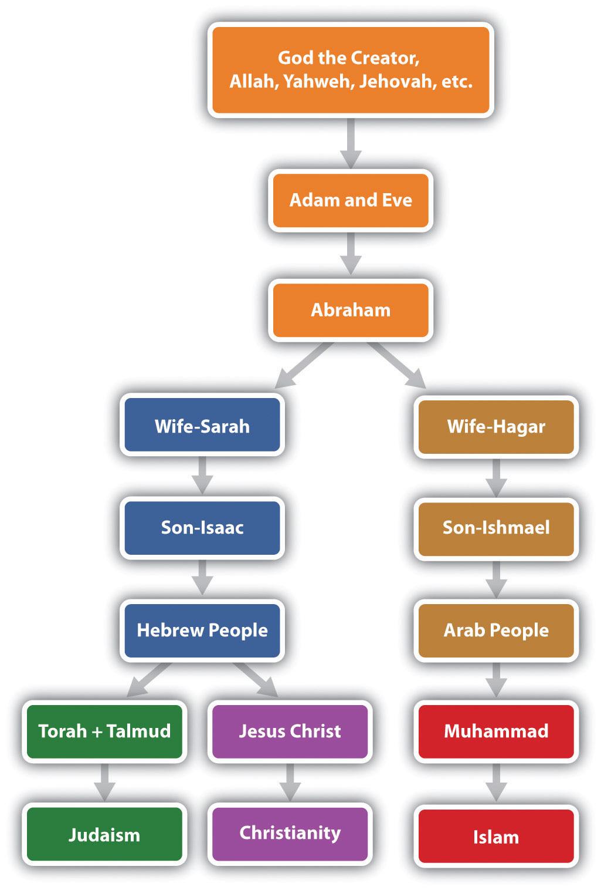It’s important to keep in mind that monotheist belief was not new: Christianity had been around for more than six hundred years. Judaism and Zoroastrianism in Persia had been around for centuries before Christianity. The principles of Islam and Muhammad’s teachings are a continuation of Judaism and Christianity. All three traditions assert a faith in a divine creator, with important messages coming through prophets or holy messengers. All three religions acknowledge Abraham as a founding patriarch. Muslims believe that Moses and Jesus were major prophets and that Muhammad was the greatest and final prophet. All three religions have stories about creation, Adam and Eve, the flood, and other similar stories that have been adapted to the traditions and characters of each religion.
Religion is a part of culture. The religions that emerged out of the Middle East absorbed many of the existing cultural traits, traditions, or habits of the people into their religious practices. Early Islam adapted many Arab cultural traits, styles of dress, foods, and the pilgrimage and folded them into its principles. Early Christianity and Judaism also adopted cultural traits, holidays, styles of dress, and cultural traditions.
The spread of Islam was accomplished through trade and conquest. Mecca was a center of trade. When camel caravans left Mecca, they carried Muhammad’s teachings with them. Islam diffused from Mecca and spread throughout the Middle East and into Central Asia and North Africa. The geographic principle of spatial diffusionThe spread of any phenomenon, idea, disease, or concept through a population across space and through time. can be applied to any phenomenon, idea, disease, or concept that spreads through a population across space and through time. The spatial diffusion of Islam outward from Mecca was significant and predictable.
There are two main types of spatial diffusion: expansion diffusionA phenomenon that starts at one point and propagates outward from person to person; includes both contagious diffusion and hierarchical diffusion. and relocation diffusionA phenomenon that starts at one point and propagates outward by relocating to a different location.. Expansion diffusion has two main subtypes: contagious diffusion and hierarchical diffusion. A religion can spread from individual to individual through contagious diffusion when a religion starts at one point and propagates or expands outward from person to person or place to place in a pattern similar to the spreading of a disease. Another way a religion can spread through expansion diffusion is hierarchically, when rulers of a region convert to the religion and decree it as the official religion of their realm; the religion filters down the political chain of command and eventually reaches the masses. The second type of diffusion, relocation diffusion, takes place when the religion relocates to a new place from a central point. When Islam jumped from the Middle East to Indonesia, it diffused through relocation. Relocation diffusion also occurred when Islam spread to the United States.
Figure 8.10 Diffusion of Islam and the Ten Countries with the Highest Muslim Populations
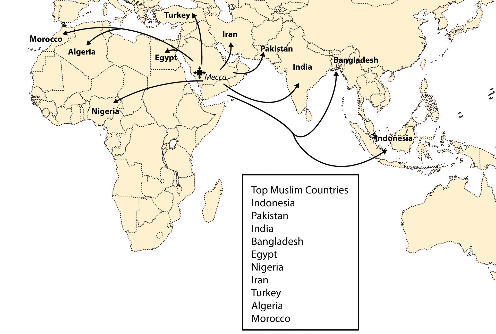Source: Data courtesy of Pew Research Center, Mapping the Global Muslim Population: A Report on the Size and Distribution of the World’s Muslim Population, http://pewforum.org/newassets/images/reports/Muslimpopulation/Muslimpopulation.pdf.
Figure 8.11 Faithful Muslims Praying toward Mecca in Umayyad, Damascus
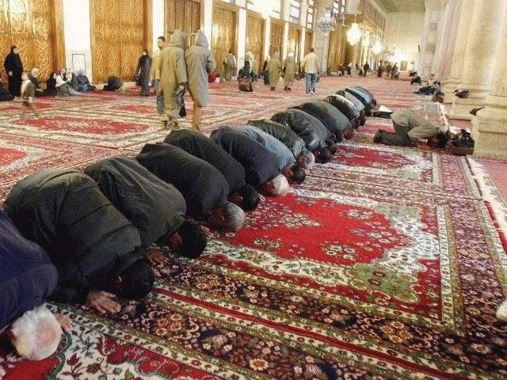Source: Photo courtesy of Antonio Melina of Agência Brasil, http://commons.wikimedia.org/wiki/File:Mosque.jpg.
Early on, the unifying principles of Islam found their way into the regional groups of Arabia and into the minds of their leaders. By 700 CE, Islam had spread to the east, to the Mogul Empire of Pakistan and northern India. In India, the Emperor Shah Jehan, who built the famous architectural marvel of the Taj Mahal as a mausoleum for his wife, was a Muslim. The expansion of Islam fueled the Arab Empire of the Middle East. The capital city of the Arab Empire was first established at Medina and then moved to Damascus and later to Baghdad. While Europe was enduring the Dark Ages, Islam was experiencing a renaissance, expanding its knowledge of mathematics, architecture, and the sciences. The Arab institutions of higher learning kept the Greek classics alive and established universities in Toledo (Spain), Cairo, and Baghdad. As of 2010, Islam has attracted as many as 1.5 billion followers, second only to Christianity, which has about 2 billion followers. Hinduism is third, with about 900 million followers. Buddhism is considered the world’s fourth-largest religion.
The basic tenets of the Five Pillars of Islam create the foundational structure of Islam. Prayer is an important part of the religion. A Muslim must offer prayers five times a day: before sunrise, at midday, at midafternoon, after sunset, and in the early evening. During prayer, Muslims face toward the compass direction of Mecca. Before clocks and time were well established, a mosque leader would climb a minaret (a tall tower next to the mosque, their place of public worship) and call the faithful to prayer at the required times of day. Muslims gather together for common prayer on Friday, which is a time to unite the community of believers. Mosques sprang up after Muhammad died, and they became the center of community activities in the Islamic world.
The Five Pillars of Islam can be translated as follows:
Muhammad died at the age of sixty-two. He never claimed to be a god or anything other than a mere mortal. His tomb is located in Medina, the City of the Prophet. No provision was made to continue Muhammad’s work after he died. One division thought his successor should be a blood relative. This division led to the Shia (or Shi’ite) branch of Islam, which makes up about 15 percent of Muslims. Others felt that the successor should be a worthy follower and did not need to be a blood relative. This branch became known as Sunni, which makes up about 84 percent of Muslims. Various smaller branches of Islam also exist, including Sufi, which approaches the Islamic faith from a more mystical and spiritual perspective.
Figure 8.12 Three Main Divisions of Islam with Approximate Percentages
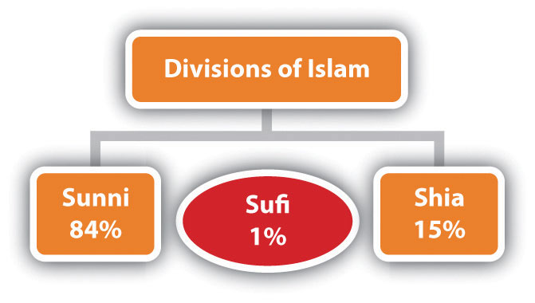Sunni Muslims look to the family and community for direction; Sunni leaders are elected by the whole community. Shia Muslims look to their imamsMosque leader in Islam. for the official source of direction. Imams hold the religious and political leadership in the Shia faith. Through the right of divine appointment, Imams are considered by many in the Shia division to hold absolute spiritual authority. Imams often have the final word regarding religious doctrine. Shia Muslims consider Muhammad’s son-in-law and cousin Ali to be the origin of the direct line of succession for Imams. Ali is considered in Islam to have been the first person to accept and follow the words of Muhammad. There are many subgroups or branches in each of the Islamic divisions.
In understanding the Middle East, it is most critical to understand the Sunni and Shia divisions of Islam. The Shia and Sunni divisions of Islam have sometimes had divergent beliefs, resulting in conflicts. In the early sixteenth century, the Persian Empire, which is now Iran, declared the Shia branch its official religion. Its surrounding neighbors were predominantly Sunni. This divergence is part of the basis for the current civil unrest in Iraq. The two divisions of Islam currently vie for political power and control in Iraq. The majority of the Arab population in Iraq, about 60 percent in 2010, follows the Shia division of Islam, but the leadership under Saddam Hussein until 2003 was Sunni. Tradition states that Ali is buried in the Iraqi city of Najaf, which is considered by Shia Muslims to be one of the holiest sites in Islam. Just north of Najaf is the city of Karbala, which is also considered to be a holy place for Shia Muslims because it is the burial place of the Prophet Muhammad’s grandson Husayn. The Shia majority in Iraq who are Arab share their faith with the Shia majority in Iran who are ethnically Persian.
Islam has a code of law called the Sharia criminal code, which is similar to Old Testament law. The Sharia dictates capital punishment for certain crimes. For example, if a person is caught stealing, his or her arm would be severed. For more serious offenses, he or she would be beheaded or stoned to death. Some countries use the Sharia as the law of their country. Countries are called religious statesA state with laws based on religious rules or doctrines determined by religious leaders. (Islamic states in this case) when religious codes take precedence over civil law. States in which people democratically vote on civil law based on common agreement are called secular statesA state with civil law based on democratic consensus or by vote that is not affiliated with any particular religion.. Whereas secular states attempt to separate religious issues and civil law, religious states attempt to combine the two. Iran is a good example of an Islamic religious state, and Turkey is a good example of a secular state. When the United States invaded Iraq in 2003 and Saddam Hussein was removed from leadership, the country entered a transitional period in which they had to decide if the country would develop into an Islamic state with the Sharia or move to a democratically elected government with civil law. The debate on these issues continually surfaces in many of the countries in North Africa and Southwest Asia whenever transition occurs.
The cultural forces of democratic reforms and Islamic fundamentalism have been pushing and pulling on the Islamic world. Democratic reformers push for a more open society with equality for women, social freedoms for the people, and democratically elected leaders in government. Islamic fundamentalists pull back toward a stricter following of Islamic teachings; they oppose what they consider the decadent and vulgar ways of Western society and wish to restrict the influence of liberal, nonreligious teaching. A rift between militant Islamic fundamentalists and moderate Islamic reformers is evident throughout the Muslim world. Militant leaders strive to uphold the Sharia criminal code as law. Moderate reformers work toward a civil law based on democratic consensus. This rift adds to the conflicts that have been occurring in this realm. Islamic fundamentalists push for a more traditional and conservative society and express opposition to the United States’ intervention in the realm. The Muslim world will continue to confront such arguments over the future direction of Islam in a globalized economy.
Identify the following key places on a map:
North Africa’s primary connection with the Middle East and Central Asia is that Islam diffused to North Africa from the Middle East and Central Asia. Today, it is a Muslim-dominated realm with Arabic as its primary language. Historically, the ethnicity of North Africa was predominantly BerberThe main ethnic background of the African groups in the Maghreb. with the nomadic TuaregNomadic ethnic group of the Sahara known for its indigo-colored clothing and use of camels for transportation. and other local groups interspersed. When Islam diffused into North Africa, the Arab influence and culture were infused with it. Modern Egypt has become the cornerstone of the Arab world; more Arabs live in Cairo than in any other city on Earth. The three main areas of interest are the Maghreb of the northwest; the Nile River valley in the east; and the African Transition Zone, where the Sahara Desert transitions into the tropical type A climates of Central Africa’s equatorial region.
Figure 8.13 North Africa and the Maghreb

The Maghreb traditionally includes Morocco, Algeria, and Tunisia, but Libya is also considered part of the Maghreb by many inhabitants of the region.
Source: Map courtesy of University of Texas Libraries, http://www.lib.utexas.edu/maps/world_maps/world_pol_2011.pdf.
Islam diffused through North Africa to the Berber people of the Maghreb and entered Europe across the Strait of Gibraltar to the Iberian Peninsula. The Arab-Berber alliance, called the MoorsBerber-Arab alliance in North Africa that crossed the Strait of Gibraltar and brought Islam to the Iberian Peninsula., invaded Spain in 711 CE. The Islamic influence thrived in Iberia and would have continued into mainland Europe if not stopped by Christian forces such as Charles Martel’s army in the famous Battle of Tours. Islam was eventually pushed out of the Iberian Peninsula and held south of the Strait of Gibraltar. Islamic architecture and influence remain part of the heritage of Iberia.
The historical geography of North Africa is not complete without an understanding of the European influences that have dominated or controlled this region for centuries. The Roman Empire controlled much of the coastal area of the Mediterranean during its zenith. The Romans built ports, aqueducts, roads, and valuable infrastructure. After the fall of the Roman Empire, common bonds of religion and language were created for the people through the invasion of the Arabs, who introduced the Islamic faith. North Africa was later dominated by European colonialism. France controlled and colonized the region of the Barbary Coast along North Africa’s western waterfront, including Algeria, Tunisia, and parts of Morocco. Italians colonized the region that is now Libya. The Barbary Coast of the Mediterranean was once a haven for pirates and a danger to shipping during the colonial era. Even the United States involved itself with wars against the pirates off the coast of the Berber states of North Africa during the early 1800s. After the fall of the Ottoman Empire, Britain controlled Egypt and parts of the Sudan. The Spanish colonized parts of Morocco and Western Sahara. In due time, resistance movements were successful in defeating the colonial powers and declaring independence for all the countries of North Africa. However, the European influence remains through the region’s dependence on trade and economic partnerships with Europe.
North Africa is separated from Subsaharan Africa by the African Transition Zone, a transitional area between Islamic-dominated North Africa and animist- and Christian-dominated Subsaharan Africa. It is also a transition between the Sahara Desert and the tropical type A climates of Africa’s equatorial region. This is a zone subject to shifting boundaries. The region was once a major trade route between the Mali Empire of the west and the trade centers of Ethiopia in the east. Camel caravans have crossed this sector of Africa for centuries, and camel caravans from Mecca might have traveled across this zone. Many nomadic groups continue to herd their livestock across the region in search of grazing.
The Maghreb is a region extending from Morocco to Libya that is distinguished by the main ranges of the Atlas Mountains, which reach elevations of near thirteen thousand feet. The main Atlas range is often snow-covered at higher elevations. The name Maghreb, which in Arabic means “Isle of the West,” receives between ten and thirty inches of rainfall per year. This is substantially more rainfall than what is received in the Sahara Desert to the south. The Atlas Mountains extract precipitation from the air in the form of rain or snow, which allows fruits and vegetables to be grown in the fertile mountain valleys of the Maghreb. To the south of this region is the vast Sahara Desert with lower precipitation and warmer temperatures. Libya is actually outside the range of the Atlas Mountains but is associated with the Maghreb by most local inhabitants.
Figure 8.14 The Main Mountain Ranges of the Maghreb

The Atlas Mountains of the Maghreb extend to the east and west of the main ranges.
Source: Map courtesy of Williamborg, http://commons.wikimedia.org/wiki/File:Atlas-Mountains-Labeled-2.jpg.
Aided by a moderate type C climate, the northern coastal region of the Maghreb and the mountain valleys are a center for agricultural production, including grapes, dates, oranges, olives, and other food products. Think about how geography affects population: Which climate type do most human groups gravitate toward? What conditions will you find when you combine this climate type and generous quantities of water and food? As you fit the pieces of the geographic puzzle together, you can understand why populations centralize in some places and not in others. The Maghreb is an attractive place for human habitation, but it borders on the inhospitable vastness of the Sahara Desert. Most of the Maghreb’s residents live in cities along the Mediterranean coast. There are few people in the vast desert interior of these countries. The exceptions are groups such as the Tuareg that are found in the Sahara.
The Maghreb is an expansive region with countries of size. Algeria, Libya, and Morocco are large countries in terms of physical area. Algeria is Africa’s largest country as of 2011. Algeria is similar in area to the entire United States east of the Mississippi River, Libya is larger than the state of Alaska, and Morocco is the size of the state of California. A large percentage of Algeria south of the Maghreb and a large percentage of the area south of the Mediterranean coastline in Libya fit the classification of desert conditions. The largest cities of Libya are along the coast, but other Libyan cities are positioned in the desert region. Tunisia, the smallest of the countries on the Mediterranean, is about the same size as the US state of Wisconsin and has mountains in its north and desert areas to the southwest.
All the countries of the Maghreb have former connections to Europe. These ties have strengthened in recent years because of an increase in trade and the economic dependencies that have been created between Europe and the Mediterranean. North Africa can grow fruit and vegetable crops that are not as plentiful in the colder northern latitudes. In the last half of the twentieth century, an enormous amount of oil was discovered in the Maghreb, and Europe has a growing need for energy. The discovery of oil changed the trade equation: oil and natural gas revenues subsequently advanced past agricultural goods as the main export products. Oil and natural gas exports now make up 95 percent of the export income for Algeria and Libya.
Europe, which is in the higher stages of the index of economic development, has small families with fewer young people to fill entry-level service jobs, and North Africa has a burgeoning population of young people seeking employment. Many people from North Africa speak the languages of their former colonial masters, and when they leave North Africa seeking employment, they find the transition to a European lifestyle relatively straightforward. Migration from the shores of North Africa to Europe is not difficult; the Strait of Gibraltar, for example, is only about nine miles across from Morocco to Spain.
Figure 8.15 The Strait of Gibraltar

North Africa is separated from the Iberian Peninsula by the Strait of Gibraltar, which connects the Mediterranean Sea with the Atlantic Ocean. The distance from Morocco to Spain across the strait is about nine miles, making immigration to Europe from North Africa only a matter of a short boat ride.
Source: Satellite image courtesy of NASA SRTM Team, http://earthobservatory.nasa.gov/IOTD/view.php?id=3926.
European countries have attempted to implement measures to halt the tide of illegal immigration into their continent from North Africa but have not been successful. The need for cheap labor in European countries is a major economic factor in this equation. The core-periphery spatial relationship creates the push-pull forces of migration based on opportunities and advantages. Europe needs cheap labor and more energy, provides employment opportunities, and has an advantage in its higher standards of living: these forces attract immigration and pull people toward Europe. North Africa can supply labor and oil, has high levels of unemployment, and suffers from poor economic conditions: these factors push people to emigrate from North Africa to places where conditions are more attractive. Europe is the core economic region, and North Africa is the peripheral economic region. People usually shift from periphery to core in their migration patterns, and this is the case across the Mediterranean.
European and American influences have been strong in North Africa. Western culture continues to compete with fundamental Islamic tendencies in the region, especially in urban centers. In Morocco, which is the farthest country from Mecca, democratic reforms have opened the country to more opportunities for women and have led to exposure to Western fashions, ideas, and products. Tunisia has a supportive Westernized society. In Libya, birth control or family planning products have not always been supported by the government, so family size remained relatively high until about 1985 when it began to decline. Women are allowed to go to college in Libya, but a smaller percentage are enrolled compared to men. More than 90 percent of Libyans live in urban areas. Exposure to Western concepts, along with urbanizing and industrializing of the economy, has caused a drop in family size in Libya—from 7.5 children in 1975, to about 4.0 children in 1990, and down to 3.0 children in 2010.“The World Factbook,” Central Intelligence Agency, https://www.cia.gov/library/publications/the-world-factbook; “Demographics of Libya,” Wikipedia, http://en.wikipedia.org/wiki/Demographics_of_Libya. More women are trading traditional dress for Western-style clothing and are entering the workforce to the extent they are allowed.
Economic and political pressures are building across North Africa. Toward the end of 2010 and the spring of 2011, activists called for the governments in North Africa to implement change and address the push of North Africans for stronger democratic openness, less government corruption, and the sharing of wealth accumulated by those in power. Leaders have been reluctant to relinquish power and are being challenged by protests and revolution. The driving forces for the people have been high unemployment rates, high food prices, and the lack of adequate housing.
Western Sahara is the region south of Morocco. In the latter half of the 1970s, Morocco annexed and took control of this region following the withdrawal of Mauritanian control. A local resistance group called the Polisario Front challenged Morocco’s claim to Western Sahara and staged a guerilla war to fight for the independence of Western Sahara. By 1991, the United Nations (UN) had stepped in, brokered a halt to the fighting, and worked to resolve the matter. Both sides have offered proposals to the UN; Morocco’s plan advocates for annexation, and Polisario’s plan is for independence. Western Sahara is mainly desert terrain and only has about three hundred thousand people. The UN delegation has indicated that independence is not realistic. However, talks continue between the factions to work out a solution.
Figure 8.16 Morocco and Western Sahara

Algeria has also experienced its share of violent clashes; in this case, the clashes are between Islamic fundamentalist groups and the democratically elected government. In the 1990s, the Islamic Salvation Front, which advocates for a fundamentalist Islamic state in Algeria, challenged the secular political mainstream. The electoral process was interrupted, and the government found itself fighting an Islamic insurgency within the country. By 1998, more than one hundred thousand people had been killed. The horror of the violence received international attention. Islamic extremists widened their attacks and massacred entire villages to send a message to support their cause. By the end of the decade, government forces gained control of the country, and the Islamic Salvation Front officially disbanded. Smaller extremist groups continued to operate. They joined forces with Osama bin Laden’s al-Qaeda group to create an insurgent group called al-Qaeda in the Lands of the Islamic Maghreb, which has continued a campaign of terror and violence against the Algerian government and people in the region with Western interests. Coinciding with similar protests across North Africa, during 2010 and 2011, there was an insurgence of protests and demonstrations against the government of Algeria by its people, who were asking for better living conditions. The government made some concessions to address the issues, but the political climate in Algeria continues to be tense as the government struggles to find ways to satisfy the needs of the people.
Tunisia was once an outpost of the Roman Empire, and well-preserved Roman ruins can be found throughout North Africa. In 1956, at the end of the colonial era, France recognized Tunisia’s independence, and the country established its own government. The political problems in Tunisia today stem from the fact that little has changed in the government since the time of independence. Since independence Tunisia has had few changes in government leaders. The country’s second president, Ben Ali, dominated the country for twenty-four years (1987–2011). Ben Ali worked to stem the tide of Islamic fundamentalism, opened the country to establishing rights for women, and allowed more tolerance of religious diversity; however, under his leadership the government struggled to find a balance between democratic openness and authoritarian measures to keep the country moving forward with economic development and social services for a growing population.
Figure 8.17 Egyptian Demonstration

Protests in Cairo’s Tahrir Square on March 4, 2011, were in support of demonstrations in Egypt and in Libya, which followed the protests in Tunisia.
Source: Photo courtesy of gr33ndata, http://www.flickr.com/photos/gr33ndata/5500654825/in/photostream.
Beginning in 2010, corruption, unemployment, and a lack of personal freedoms prompted Tunisians to take to the streets in massive protests, which grew into a revolution for change. By the end of the year, President Ben Ali was removed from power and an interim government was formed. Protests continued as the government shifted to adapt to the conditions. In 2011, a new constitutional assembly was formed to address changes in the government. Economic conditions have remained thorny during the transition.
Muammar Gadhafi came to power in Libya in 1969 by overthrowing the king and never held an election for political control. He used Libya’s oil revenues to build up the country’s infrastructure, enhance his military, and create an anti-Western terrorist network with weapons production. Personal freedoms have been limited in Libya, and there has been no free speech, freedom of the press, or freedom of assembly. Gadhafi supported various Islamic terrorist groups and nationalized all the oil assets of international corporations in Libya in the early 1980s. This action of nationalism directly opposed and angered many corporate colonialists. His policies caused the international oil companies, which operated much of the oil industry there, to pressure the US government to conduct a series of devastating military bombing raids on Libya in 1986 in an attempt to kill Gadhafi.
Gadhafi deployed his military along Libya’s southern border with Chad in a zone called the Aozou Strip. This border territory was the site of a boundary dispute over land that was reported to hold uranium reserves. Libyan forces controlled the Aozou Strip for a number of years before Chad forced them out. In 1994, the UN ruled that the zone belonged to Chad, and the dispute was finally resolved. In other activities, Libyan agents were accused of planting bombs on passenger airlines, such as the 1988 explosion on Pan Am flight over Scotland that killed 270 people and the 1989 explosion of UTA flight 772 over Niger that killed 170 people. After the 9-11 tragedy in New York, Gadhafi backed down on his aggressive anti-Western activities and agreed to dismantle some of his weapons production facilities and comply with international trade agreements. Libya then denounced terrorism, and the United States lifted economic sanctions against Libya and exchanged ambassadors.
Unrest in Libya surfaced again in 2011, coinciding with protests under way in neighboring Tunisia, Algeria, and Egypt. Factions in Libya that opposed Gadhafi’s regime advocated for his removal from office and for more democratic freedoms. Based in Libya’s second-largest city of Benghazi, in the eastern sector of the country, the resistance movement gained momentum and pushed for an all-out civil war that split the country in half. Forces loyal to Gadhafi in the capital city of Tripoli in the western part of the country faced off against the separatists under the structure of the National Transitional Council (NTC). In 2011, Gadhafi had been in power for more than forty-two years. His family and clan controlled much of the country’s wealth from the export of oil. Gadhafi’s control of Libya did not allow for the establishment of strong administrative divisions within the government to share power.
The UN, through the North Atlantic Treaty Organization (NATO), implemented a no-fly zone over Libya and allowed military strikes against Gadhafi’s forces to stop the massacre of civilians in the civil war. By the end of the summer of 2011, the resistance forces headquartered in Benghazi had pushed across to the western part of Libya and took control of Tripoli. Gadhafi was no longer in control of the country, as the NTC became the transitional power base. Muammar Gadhafi was killed in October 2011. Post-Gadhafi Libya will most likely be quite different from the status quo of the past four decades. Nation building will become a major focus for North Africa, which may be more difficult for Libya than its neighbors because of the lack of an administrative structure.
Figure 8.18 Control of Cities in Libya Based on the Civil War as of June 5, 2011

Source: Map courtesy of Rafy, http://commons.wikimedia.org/wiki/File:Libyan_Uprising.svg.
The Nile River originates in East Africa in Lake Victoria and in Ethiopia in Lake Tana. The White Nile flows north from Lake Victoria through Uganda and into Sudan, where it converges with the Blue Nile at the city of Khartoum, Sudan’s capital. The Blue Nile originates in Lake Tana in Ethiopia. From Khartoum, the Nile River flows north through the Nubian Desert into Egypt, where it eventually reaches the Mediterranean Sea. The fresh water of the Nile is a lifeline that enables agriculture and transportation and supports a growing human population in the region.
Figure 8.19 Nile River System

The White Nile originates in Lake Victoria, and the Blue Nile originates in Lake Tana. They converge at Khartoum.
Until the Aswan High Dam was completed in 1968, the river flooded its banks yearly, depositing silt and nutrients onto the soil and causing enormous damage to infrastructure. As far back as when the pharaohs ruled Egypt, the people used flood irrigation to grow their crops. Today, water is pumped from the controlled Nile River onto the fields to water crops. This change has increased the number of crops that can be grown per year. However, it has also caused a buildup of salt in the soil, resulting in declining soil quality. Without annual flooding, the salts cannot be dissolved away but remain in the soil, reducing yields. Almost a third of Egypt’s population works in agriculture; about half the population is rural.
Cairo, Egypt’s capital, lies at the northern end of the Nile River. With a population of more than ten million, it is the largest North African city and home to more Arabs than any other city in the world. It is considered the cornerstone city of Arab culture. Cairo is so crowded that more than a million people live in its old cemetery, the City of the Dead. Cairo’s residents, and the millions of people in Egypt, depend on the Nile River for their survival. About 95 percent of Egypt’s population lives within fifteen miles of the Nile River. As the population has grown, urban expansion has encroached on the farmland of the Nile Valley. Egypt can no longer produce enough food for its people; about 15 percent of its food comes from other countries, mainly the United States.
Conflicts between democratic reforms and Islamic fundamentalism are evident in Egypt. The growing population of about eighty million in 2010 is a major concern. In Egypt’s case, democratic reformers were able to promote a strong program of family planning and birth control to help reduce family size, which in 2008 was at 2.8 children per woman and declining. The government even created a popular Egyptian soap opera to promote the concept that it was appropriate in an Arab culture to use family planning and have a small family. The prime-time program, called And the Nile Flows On, told the story of a young village bride dealing with the issues of pregnancy and life complicated by the interjection of a progressive sheik and a meddling female doctor. The drama addressed many family planning and religious issues regarding the acceptability of breaking with tradition to address the growing population problem in Egypt.
Television programming is popular in Egypt, and even reruns of old American shows such as Bonanza and Dallas are dubbed into Arabic and shown on Egyptian television. Egypt is a cultural mix with a strong heritage steeped in Arab history with a secular side that is open to the outside world. The cultural forces that create this paradox have not always been in unison. Egypt has a major connection to Western society because of tourism. The Pyramids of Giza and the Great Sphinx are major attractions that pull in millions of people per year from around the world. Tourism opens up Egypt to outside elements from various cultural backgrounds, most of which are secular.
On the political front, the democratically elected government has received strong opposition from the Islamic BrotherhoodMuslim-based organization in Egypt that was banned by the Egyptian government., which advocates a more fundamentalist Islamic lifestyle and government structure. The democratic reformers that vie with the Islamic Brotherhood for political power support a more open and democratic civil government. These two elements are what drive Egyptian culture and society.
Figure 8.20 Protesting in Egypt

On January 25, 2011, the “Day of Revolt” protests were held in Egypt. Tens of thousands of Egyptians went onto the streets to peaceably protest against the Mubarak government.
Source: Photo courtesy of Muhammad Ghafari, http://www.flickr.com/photos/70225554@N00/5390371651.
The political situation changed in Egypt with the Arab Spring of 2011. Student protests against government corruption and the lack of democratic reforms emerged with an intensity that gained the support of the Egyptian people and forced the Egyptian government to respond. Egyptian president Hosni Mubarak had been in power since 1981 after the assassination of the previous president, Anwar Sadat. President Mubarak was able to win every election for president that had been held since that time. Millions of Egyptians took to the streets in early 2011 in civil protests against the Mubarak government. Massive protests and demonstrations continued until February 11, when President Mubarak announced his resignation. The transition to an interim government has been complicated by continued protests and calls for justice from the people, who have called for Mubarak to stand trial for stealing billions of dollars from the state and concealing it in his own bank accounts. The people and the government continue to search for progressive opportunities to address their issues. What started out as the Arab Spring turned into the Arab Year as all three long-term leaders in Tunisia, Libya, and Egypt were removed from positions of power.
Figure 8.21 Camel and Tuareg Rider in the Southern Sahara Desert

The Tuareg are masters of the desert and camels. They often lead camel caravans on long trips through the desert.
Source: Photo courtesy of Marco Bellucci, http://www.flickr.com/photos/marcobellucci/3417054939.
Stretching across the widest part of Africa on the southern edge of the Sahara Desert is the African Transition Zone. Known as the SahelMeaning “border or margin”; the local variation of the African Transition Zone., meaning “border or margin,” this zone is where the dry arid conditions of the desert north meet up with the moister region of the tropics. For thousands of years, the seasonal grazing lands of the Sahel have been home to nomadic groups herding their livestock across the zone and eking out a living held together by tradition and heritage. Changing climate conditions and overgrazing has enhanced the desertificationLoss of plant life and the encroachment of sand, creating desert conditions. process, and the region is slowly turning into desert. The Sahara Desert is shifting southward, altering the economic activities of the millions of people who live in its path. Ten thousand years ago, North Africa and the Sahara Desert were tropical environments filled with all the biodiversity and wildlife now found in Subsaharan Africa. This desertification process has been occurring for centuries; it is not a new process. Human factors and climate change may be accelerating this process, but they did not create it.
Political stability is complicated to achieve in the African Transition Zone. The political borders established by European colonialism during the Berlin Conference of 1884 remain basically intact and create barriers that hamper the nomadic groups from traveling through the Sahel in search of grazing land for their livestock. Political boundaries now restrict movement and keep people divided and separated into national identities. The African Transition Zone is also in transition from a rural, traditional agrarian culture to a society confronting the information age and modern technology. Camel caravans that once transported goods and materials across wide expanses of desert terrain are being replaced with motor vehicles and aircraft. The many traditional groups across this zone are adapting to the conditions of the modern world but work to retain their values and the traditions of their heritage.
The colonial political borders have impeded progress in the region’s effort to establish stable governments and control the land and resources within its borders. Postindependence governments have thus far been unable to establish stable economic conditions within many of the countries in the Sahel. Natural resources are being exploited for economic profit, which is changing the natural environment. Security and safety have become significant issues. Today this region is unstable, with political and cultural conflicts between the local groups and governments. The current conflicts in Sudan are examples of the instability.
Comparable in size to the entire United States east of the Mississippi River, Sudan is the largest country in Africa. The capital city of Khartoum lies where the Blue Nile River converges with the White Nile. Khartoum’s government has a black Arab majority and follows Islam, complete with Sharia laws. The African Transition Zone crosses Sudan and separates the Arab-Muslim north from the mainly African-Christian south. There has been a civil war between the north and the south for decades. Before a peace agreement brokered in 2005, military soldiers from the north would raid the villages in the south, taking women and children as slaves. Though the Sudanese government denied the slave trade, thousands of Africans were owned by northern black Arabs in Sudan, and many still are. The world community has made little effort to intervene. The price for a slave in Sudan is about fifty US dollars.
The differences in religion, ethnicity, and culture have always divided southern Sudan from the north. Additional economic considerations might fuel the debate because of an increase in oil production in the region. In January 2011, the southern region of Sudan voted on a referendum that would allow the south to break away and become an independent country called the Republic of South Sudan. The acceptance of this new republic will change the map of the region and the dynamics between South Sudan and North Sudan. The new Republic of South Sudan was formalized in July of 2011. Juba is designated as the capital with talk of creating a new forward capital in the center of the newly formed country in the future. The many clans and indigenous groups make it difficult for unity and cohesiveness in the new country. Armed groups in the various states continue to cause internal division, while at the same time boundary disputes continue to be worked out with North Sudan.
In 2003, various groups in Darfur complained that the Khartoum government was neglecting them. A militia group calling itself the JanjaweedMilitias in Sudan hired by the Arabs to ethnically cleanse the Darfur region. was recruited by the local Arabs to counter the resistance in Darfur. The Janjaweed began an ethnic cleansing campaign that pushed into the Darfur region, burning villages, raping women, and killing anyone who opposed them. Refugees began to flee into the neighboring country of Chad.
Figure 8.22 Sudan, the Region of Darfur and the Republic of South Sudan

South Sudan has elected to break away and become independent. The Darfur region has been experiencing genocide by Janjaweed militias backed by the Arab majority in northern Sudan.
In this particular case, the campaign was not based on religious divisions, because both sides were Muslim. This was an ethnic conflict in that the people of Darfur are of a traditional African background and the people of northern Sudan consider themselves Arab, even though they may have dark skin. Accurate numbers have been difficult to verify, but as of 2010 an estimated 300,000 people have died in this conflict. There are more than 2.7 million refugees, many of them in Chad.“Q&A: Sudan’s Darfur Conflict,” BBC News, http://news.bbc.co.uk/2/hi/africa/3496731.stm. Just as the government of Sudan denied the slave trade, it denies that it supports the Janjaweed. The African Union provided a modest number of peacekeeping troops before the UN stepped in to provide security. It has been up to the world community and Sudan to take more action and provide more assistance. Food, water, and care for the refugees have taxed the region’s aid and support system.
Former Libyan leader Muammar Gadhafi was instrumental in the development of the African Union (AU) in the mid-1990s. The Sirte Declaration (titled after Gadhafi’s hometown of Sirte in Libya) was issued by the Organization of African Unity, which outlined the need for the creation of the AU. The AU was launched in Durban, South Africa, on July 9, 2002. Fifty-three countries formed this intergovernmental organization. The focus of the AU is on the health, education, economic development, political stability, environmental sustainability, and general welfare of the people of Africa. The organization strives to integrate the socioeconomic and political stability of its members and promote a continent-wide effort for security and peace. The AU is working to create a proper political climate, one that helps its member states engage in the global economic marketplace by negotiating international issues and policies that affect Africa.
The dominating activities of colonialism and neocolonialism (corporate colonialism) are big concerns for the AU. The AU’s objective is to bring more unity to the political and economic arena between the African countries to address the transition to a globalized world. It faces many challenges within its realm, including health care issues such as HIV/AIDS and malaria that have devastated much of Africa. The AU is working to bring political stability to countries such as Sudan and other countries experiencing civil unrest because of political turmoil or civil war, such as the Congo, Somalia, Sierra Leone, Ivory Coast, and Liberia. AU peacekeeping troops are assisting in this process. The legal issues regarding border disputes or territorial disputes such as that of Western Sahara are problems that the AU attempts to address.
In the global scale of economic and political supranationalism, the AU will be up against three main powerhouses: the European Union, the North American Free Trade Agreement, and the East Asian Community. Regions across the globe are working on trade associations to create economic networks to bring about greater cooperation and commerce between nations. The AU is one part of that network that represents a growing percentage of the world’s population and the second-largest continent on Earth.
Gadhafi was the AU chairman when the uprisings and demonstrations of the Arab Spring began in January of 2011, at which time his chairmanship ended. At the beginning of the civil war in Libya, the AU attempted to meet with Gadhafi to mediate the situation. The NATO no-fly zone declaration and intervention restricted AU activities in Libya. After Gadhafi was no longer in power in Libya by the fall of 2011, the AU continued to not recognize the NTC (National Transition Council) as the legitimate government of Libya.
Identify the following key places on a map:
At the center of the Middle East, on the shores of the Mediterranean in the Levant (the area bordering the eastern Mediterranean Sea), lies the country of Israel. Israel is bordered by Lebanon to the north, Syria and Jordan to the east, and Egypt to the south. Covering an area of only 8,522 square miles, Israel is smaller than the US state of Massachusetts and only one-fifth the size of the state of Kentucky. The coastal region, which has a moderate type C climate, receives more rainfall than the dry interior and the Negev Desert in the south, both of which have arid type B climates. The Sea of Galilee, also called Lake Kinneret or the Sea of Tiberias, is a major fresh water supply. The Jordan River flows from the Sea of Galilee to the Dead Sea. The Dead Sea is 1,300 feet below sea level, so it has no outlet. Over time, salts and minerals have built up, creating an environment that does not support fish or aquatic life. South of the Negev Desert is the Gulf of Aqaba, which provides access to the Red Sea for both Israel and Jordan. Israel does not have substantial oil resources but has a potential for natural gas in offshore locations along the Mediterranean Sea.
Though most of the population in the Middle East is Islamic, there are exceptions, such as in Israel, which has a Jewish majority. Israel was established in 1948. Before that time, the country was called Palestine. The region went through a series of tumultuous transitions before it became the nation of Israel. Before 1948, most people in Palestine were called PalestiniansPeople who lived in the region of Palestine before Israel was recognized as a nation in 1948. and consisted primarily of Arab Muslims, Samaritans, Bedouins, and Jews. Most Jewish people were dispersed throughout the world, with the majority in Europe and the United States.
Palestine was a part of the Turkish Ottoman Empire before the end of World War I. Britain defeated Turkish forces in 1917 and occupied Palestine for the remainder of the war. The British government was granted control of Palestine by the mandate of the Versailles Peace Conference in 1919 at the end of World War I. Britain supported the Balfour Declaration of 1917, which favored a Jewish homeland. The British Mandate included Palestine and Transjordan, the area east of the Jordan River, which includes the current country of Jordan.
Between 1922 and 1947, during British control, most of the population of Palestine was ethnically Arab and followed Islam. In 1922, Jews made up less than 20 percent of the population. The Jewish settlements were mainly along the west coast and in the north. Jewish people from other countries—including primarily Jews escaping German oppression in the 1930s—migrated to the Israeli settlements. Palestine was turned over to the control of the newly created United Nations (UN) in 1945 at the end of World War II.
The United Nations Special Committee on Palestine (UNSCOP) was created by the UN in 1947. To address the Palestine region, UNSCOP recommended that Palestine be divided into an Arab state, a Jewish state, and an international territory that included Jerusalem. Palestine was divided by the UN. About 44 percent of the territory was allocated to the Palestinians, who consisted of about 67 percent of the population, which was mainly Arab. Approximately 56 percent of the territory was allocated to the minority Jewish population, who only consisted of about 33 percent of the population. The country of Jordan was created out of the region east of the Jordan River and the Dead Sea. The city of Jerusalem was to remain under the administrative control of the UN as an international city. The Jewish State of Israel was officially recognized in 1948. The Palestinians, who were a majority of Israel’s total population at the time and who owned about 90 percent of the land, denounced the agreement as unacceptable.“Division of Palestine by United Nations,” Knowledgerush, http://www.knowledgerush.com/kr/encyclopedia/Division_of_Palestine_by_United_Nations. One of the consequences of the territorial partition was that thousands of Palestinian Arabs were forced off the land that was allocated to the Jewish state. These Palestinians became refugees in the Palestinian portion or in neighboring countries.
Palestine’s Arab neighbors—Syria, Saudi Arabia, Lebanon, Iraq, and Egypt—sided with the Arab Palestinians and declared war on Israel. The war did not end favorably for the Arabs. With support and aid from Britain and the United States, the Jewish State of Israel defeated the attacking Arab armies and took control of a larger portion of the land, including some of the land designated by the UN as a portion of the Arab half.
Figure 8.23 Satellite Image of Palestine (left); 1948 UN Division of Palestine into Half Jewish State and Half Arab State (center); Political Map of Israel in 2011(right)

Sources: Satellite image on left courtesy of NASA, http://commons.wikimedia.org/wiki/File:Southeast_mediterranean_annotated_geography.jpg. Map in the center courtesy of Kordas, http://commons.wikimedia.org/wiki/File:1947-UN-Partition-Plan-1949-Armistice-Comparison-es.svg. Map on right courtesy of CIA World Factbook.
After the Arabs lost the first war against the Jewish State of Israel, the Palestinians’ problems increased. By 1950 over 750,000 Palestinians living in the Jewish-controlled regions of Israel were forced out of their homes and into refugee camps. According to the UN in 2010, about one-third of the registered Palestine refugees, more than 1.4 million, live in fifty-eight recognized refugee camps in Jordan, Lebanon, the Syrian Arab Republic, the Gaza Strip, and the West Bank, including East Jerusalem. Jordan has the highest number of Palestinian refugees: almost two million, with more than 330,000 living in refugee camps.“Palestine Refugees,” United Nations Relief and Works Agency for Palestine Refugees, http://www.unrwa.org/etemplate.php?id=86; “Statistics,” United Nations Relief and Works Agency for Palestine Refugees, http://www.unrwa.org/etemplate.php?id=253. Jordan has allowed most of its Palestinian refugees to receive Jordanian citizenship.
By 1967, the Arab armies had regrouped and were willing to attack Israel again. The 1967 war was short lived, lasting only about a week. The Arab armies were devastated once again, and Israel gained even more territory. Israel took the Sinai Peninsula and the Gaza Strip from Egypt, the Golan Heights from Syria, and the West Bank from Jordan. The entire city of Jerusalem came under Israeli control. The 1967 war solidified the control of the region of Palestine under the Israeli government and placed Israel at greater odds with its Arab neighbors. Syria wanted Israel to return the Golan Heights, which has a strategic military advantage in overlooking northern Israel, and Egypt wanted Israel to return control of the Sinai Peninsula.
Egypt and Syria attacked Israel again on October 6, 1973, which was Yom Kippur, the most solemn holiday in the Jewish religion. The Israeli army counterattacked, driving the Syrians out and the Egyptian army and back across the Suez Canal. After a few weeks of conflict, a peace treaty was agreed upon. In 1977, Israeli president Menachem Begin and Egyptian president Anwar Sadat were invited to Camp David, Maryland, by US president Jimmy Carter. Israel and Egypt signed the Camp David AccordA 1977 peace agreement between Israel and Egypt to not go to war again., an agreement not to go to war again. Egypt agreed to officially recognize the State of Israel and to not invade Israel again. Israel agreed to return the Sinai Peninsula to Egypt; the peninsula was returned in 1982. Each participant in the accord won the Nobel Peace Prize.
Figure 8.24 The Western Wall in Jerusalem

A remnant of the Jewish temple built by Herod the Great and destroyed in 70 CE, the Western Wall is the most holy place for the Jewish people. The Dome of the Rock mosque in the background is the third-holiest site for Muslims.
Source: Photo by R. Berglee.
In 1980, Israel passed the Jerusalem Law, which stated that greater Jerusalem was Israeli territory and that Jerusalem was the eternal capital of the State of Israel. The UN rejected Israel’s claim on greater Jerusalem, and few if any countries have accepted it. Israel moved its capital from Tel Aviv to Jerusalem to solidify its claim on the city even though most of the world’s embassies remain in Tel Aviv. The move of the capital was designed to create a forward capital, the purpose of which is usually either to protect a nation’s territory or to spur the development of the country. In this case, it was to protect valuable territory.
Palestinians were left with only the regions of the Gaza Strip and the West Bank, which is controlled by the Israeli government and is subject to Israel’s national jurisdiction. As of 2010, about 1.5 million Palestinians live in the Gaza Strip and 2.5 million live in the West Bank. A number of cities in the West Bank and Gaza Strip have been turned over to the Palestinian Authority (PA) for self-governing. The PA was established between the Palestine Liberation Organization (PLO)Governing body that represents the Palestinians. and the Israeli government to administer internal security and civil matters. The PLO and the PA are two separate entities. The PLO is the internationally recognized governing body of the Palestinian people. It is legitimately recognized by the UN to represent the area known as Palestine in political matters. There are two main political parties within the PLO: Hamas and Fatah. The Hamas party is the strongest in the region of the Gaza Strip, and the Fatah party is more prominent in the West Bank.
The future of the West Bank and the Gaza Strip has been the focus of talks and negotiation for decades. There are various ways to approach this issue; a one-state solution and a two-state solution have been proposed. The one-state solution proposes the creation of a fully democratic state of Israel and the integration of all the people within its borders into one country. Integration of the Gaza Strip and the West Bank into the Jewish State of Israel is part of this plan; in other words, “Take the walls down and create one state.”Source: Mahmoud Masri, Nablus—West Bank 2011 (Paraphrased quote). Many Palestinians support the one-state solution, but most of the Jewish population does not. Family size is much larger in the Palestinian side, so it would be only a matter of time before the Jewish population would be a minority population and would not have full political control with a democratic government. To have the Jewish State of Israel, the Jewish population needs to keep its status as the majority.
In a two-state solution, Palestinians would have their own nation-state, which would include the Gaza Strip and the West Bank. The rest of former Palestine would be included in the Jewish State of Israel. The two-nation concept (Israel and a Palestinian state) has been proposed and supported by a number of foreign governments, including the United States. Implementation of a two-state solution is, of course, not without its own inherent problems. At the present time, the West Bank and the Gaza Strip are subjects under the Jewish State of Israel without full political or economic autonomy. The two-state solution would buy more time for the Jewish population with smaller families to retain power as a majority political voting bloc.
Parties to the negotiations have acknowledged that the most likely solution is to create a Palestinian state bordering Israel. However, it is not clear how to make this happen. Palestine is now divided between the Jewish State of Israel (with 7.3 million people) on one side and the Palestinians (with 4.0 million people) in the West Bank and the Gaza Strip on the other side. About 75 percent of Israel’s population of 7.3 million people are Jewish, and about 25 percent are Arab. Travel between Israel and the Palestinian areas is heavily restricted and tightly controlled. A high concrete and barbed wire barrier separates the two sides for much of the border. The West Bank provides fresh water used on the Israeli side for agriculture and industrial processes. The industries also employ Palestinians and support them economically.
Jewish people from various parts of the world continue to migrate to Israel, and the Israeli government continues to build housing settlements to accommodate them. Since the West Bank region is under the Israeli national jurisdiction, many of the new housing settlements have been built in the West Bank. The Palestinians who live there strongly oppose the settlements. In 1977, only about five thousand Jews lived in the West Bank settlements. As of 2010 there were more than two hundred thousand. The Palestinians argue that if they were to have their own nation-state, then the Jewish settlements would be in their country and would have to be either resettled or absorbed. Israel responds by indicating that the two-state solution is indefensible because the Jewish settlements in the West Bank cannot be protected if the West Bank is separated from Israel.
The issues in Israel are generally complicated. After a series of wars and considerable negotiations, the central problems remain: Jews and Palestinians both want the same land, both groups want Jerusalem to be their capital city, and neither group can find a compromise. Support for the Jewish State of Israel has primarily come from the United States and from Jewish groups external to Israel. There are more Jews in the United States than there are in Israel, and the US Jewish lobby is powerful. Israel has been the top recipient of US foreign aid for most of the years since 1948. Through charitable donations, US groups provide Israel additional billions of dollars annually. Foreign aid has given the Jewish population in Israel a standard of living that is higher than the standard of living of many European countries.
In the past decade, most of the PLO’s operating budget has come from external sources. Arab neighbors provide millions of dollars annually. Though Iran is not Arab, they have provided aid to the Palestinian cause in support of fellow Muslims against the Jewish State of Israel. The PLO has received the bulk of its funding from the European Union. Russia has also provided millions of dollars in aid. The United States provides millions in direct or indirect aid to the Palestinians annually.
The Gaza Strip is one of the most densely populated regions on Earth, and it is located in a desert. There are few jobs and no real methods of gaining wealth. Palestinians living in the Gaza Strip or the West Bank need to rely on outside support to survive. These are small areas with lots of people. The West Bank is only about thirty miles wide by seventy-five miles long, yet more than 2.5 million people call it home. The Gaza Strip is a desert region about six miles wide by twenty-three miles long and is home to more than 1.5 million people. In 2010, family size in the West Bank was about 3.2, and in the Gaza Strip, it was about 5.0. Unemployment rates averaged about 40 percent in the Gaza Strip and over 20 percent in the West Bank.“The World Factbook,” Central Intelligence Agency, https://www.cia.gov/library/publications/the-world-factbook Underemployment is also a major issue in that there may be few employment opportunities for professionals with specialized skills or a university degree in a specific field of interest.
Figure 8.25 A Street in the West Bank City of Nablus

Cell phones are ubiquitous in Nablus.
Source: Photo by R. Berglee.
In 2006, both Israel and the PLO held democratic elections for their leaders. In 2006, a candidate from the Hamas party won the election for the leadership of the PLO, which concerned many of the PLO’s external financial supporters. The Israeli government characterizes Hamas as a terrorist organization that supports the destruction of the State of Israel. Hamas has advocated for suicide bombers to blow themselves up on populated Jewish streets. The Jewish State of Israel has been fighting a low-level war against Palestinian resistance groups such as Hamas since 1948. In 2008, the leaders of the Fatah party, which are more prominent in the West Bank region, took matters to the PLO Central Council, which chose Mahmoud Abbas as president of the State of Palestine.
Figure 8.26 Security Wall between Israel and the West Bank

Source: Photo by R. Berglee.
The problems between Israel and Palestinians are far from settled. The region has plenty of interconnected concerns. The biggest supporter of Israel, the United States, invaded Iraq in 2003, an invasion that raised the concern level of Islamic groups in the Middle East, including the Islamic leaders that control the government of Iran. Israel has nuclear weapons, and Iran has worked at developing nuclear weapons. US involvement in the region has heightened tensions between Iran and Israel. Oil revenues are driving the economies of most of the Arab countries that support the Palestinians. Oil is an important export of the region, with the United States as a major market. The difficulties between Israel and the Palestinians continue to fuel the conflict between Islamic fundamentalists and Islamic reformers. Some Islamic groups have accepted Israel’s status as a country and others have not. The Israel-Palestinian problem drives the geopolitics of the Middle East. The US war in Iraq has complicated the situation but has not superseded it. The situation in Palestine is predicted to continue long after the problems in Iraq have stabilized.
Figure 8.27 West Bank Settlements and Palestinian-Controlled Areas

Source: Updated from map courtesy of CIA World Factbook.
North of the Arabian Peninsula are three Arab states that surround Israel: Jordan, Syria, and Lebanon. Each country possesses its own unique physical and cultural geography. The country of Jordan was created through the British Mandate after World War I, when Britain defeated the Turks in Palestine. The area east of the Jordan River became the modern country of Jordan in 1946. From 1953 to 1999, during the most volatile period of the region, the country was ruled by a pragmatic leader, King Hussein, who was able to skillfully negotiate his way through the difficult relationship with Israel and yet keep his country stable. When Palestine was divided by the UN to create the State of Israel, the region of Jordan received more than a million Palestinian refugees from the West Bank and Israel. Refugees make up a large portion of the more than six million people who live in Jordan today; about a half million refugees from the US war in Iraq are included in that total.
Jordan is not large in physical area. Natural resources such as oil and water are not abundant here, and the country often has to rely on international aid to support its economy. Inflation, poverty, and unemployment are basic issues. The government of Jordan is a constitutional monarchy. King Hussein’s son ‘Abdullah II took power after the king’s death in 1999. Economic reforms were implemented by King ‘Abdullah II to improve the long-term outlook of the country and raise the standard of living for his citizens. The king allowed municipal elections to be conducted, which allowed for 20 percent of the positions to be dedicated to women candidates. Parliamentary elections were held by a democratic vote.
Figure 8.28 King ‘Abdullah II of Jordan Visits US President Barack Obama in the White House in 2011

Jordan has had good political relations with the United States. King ‘Abdullah II has worked to maintain a stable government in Jordan and maintain civil stability in spite of Jordan’s lack of economic opportunities.
Source: Photo courtesy of the White House.
Figure 8.29 Jordan

Source: Map courtesy of CIA World Factbook.
Jordan has demonstrated how a country with few natural resources in a volatile region of the world can proceed down a progressive path despite difficult circumstances. Jordan has developed a positive trade relationship with Europe and the United States while at the same time working with its Arab neighbors to access oil and to maintain a civil state of affairs. Jordan is not without its challenges but has managed to confront each issue yet retain a sense of stability and nationalism.
The strategically located country of Syria is at the center of the Middle East’s geopolitical issues. Syria gained its independence from the French Mandate in 1946, the same year as Jordan. Syria has strived to work out and stabilize its political foundation. In a move to create greater Arab unity in the realm, Egypt and Syria joined forces and created the United Arab Republic in 1958. This geopolitical arrangement lasted until 1961, when the partnership was dissolved. Syria returned to its own republic. The Arab Socialist Baath Party gained strength, and in 1970 Hafiz al-Assad, of the AlawiteMinority religious group that is an offshoot from Shia Islam and has controlled Syria for decades. minority (an offshoot branch of Shia Islam making up about 10 percent of the Syrian population), took over leadership in a coup that stabilized the political scene. It was during this era that the Golan Heights was lost to Israel in the Arab-Israeli War of 1967. This strategic geographical location is a point of contention in the peace negotiations between Syria and Israel.
Hafiz al-Assad served as the leader of Syria for twenty-nine years without having been democratically elected to the office by the people. His son Bashar took the reins of leadership after Hafiz died in 2000. The Alawite sect held power in Syria through the Assad family under military control. Syria has been accused of using its military power to influence conditions in Lebanon, where it brokered a peace deal in its civil war (1975–1990). Syria has also been accused of supporting the anti-Israel groups headquartered in Lebanon.
Syria is located in an ancient land with a long history of empires and peoples. The region of Syria was once part of the cradle of civilization that sprung up in Mesopotamia. Damascus claims to have been continually inhabited longer than any other capital city on Earth. The largest city and the center of industrial activity is Aleppo, which lies in the north of Syria. Syria’s physical area is slightly larger than the US state of North Dakota. Overall, Syria’s climate is characterized as an arid type B climate; some regions receive more rain than others. The western region, because it borders the Mediterranean Sea, is an area that receives more rainfall. The additional rainfall translates into extensive agricultural production. The northeast area of Syria is also productive agriculturally through water resources provided where the Euphrates River cuts through the country. Oil and natural gas have been the country’s main export products. The petroleum reserves are being depleted, and few new fields are being developed. Eventually, the wealth generated by the sale of petroleum reserves, which are finite resources, is projected to diminish, even as the population continues to increase.
The Syrian government has exerted strict control over the economy. The country will face serious economic issues in the future. There is a high rate of unemployment. Because oil production has not been increasing, the government has been forced to take on additional national debt. The arid climate and the need to supplement agriculture production have placed additional pressure on precious fresh water supplies. The Euphrates River provides fresh water, but it originates in Turkey, where large dams restrict the flow. Water rights for the region are therefore an issue. One third of Syria’s population is under the age of fifteen, which indicates a rapid population growth pattern that will tax future resources at an increasing rate. In 2010, Syria had about twenty-two million people. The country holds political significance; its strategic location between Iraq and Israel makes it is a vital player in any solution for lasting peace in the Middle East.
Figure 8.30 Female Protesters in Douma, a Suburb of Damascus, in 2011

Source: Photo courtesy of syriana2011, http://www.flickr.com/photos/syriana2011/5650171577.
Figure 8.31 Syria

Source: Map courtesy of CIA World Factbook.
Syria has experienced protests and demonstrations similar to those that swept through North Africa in the Arab Spring of 2011. Citizens expressed dissatisfaction with the government because of the lack of democratic reforms, high unemployment, and the loss of civil rights, which had been taken away when the government declared a state of emergency in 1963. Student protests escalated to massive citizen demonstrations that emerged in various Syrian cities in the spring of 2011. The government cracked down on protesters, killing some. After extensive demonstrations on March 15, the government arrested more than three thousand people. Hundreds have been killed in violent clashes between the people and government security forces.
The lack of democratic processes by President Bashar al-Assad’s government has continued to prompt protests and demonstrations in Syria. The US government eventually placed sanctions against Assad and a number of high-level Syrian officials. A new cabinet was installed in Syria, and the decades-old state of emergency was rescinded. Unrest and protests by the people continue, and the government responds by cracking down on them with harsher methods. Syria’s neighbors and various European nations have increased sanctions and denounced the Assad regime, which has increased the pressure on Syria.
The uprising in Syria that started as a part of the wave of the Arab Spring continues. The Arab Spring protests and demonstrations in Syria have often been compared to those in Libya. Both Syria and Libya have had long-time leaders that ruled for decades without democratic reforms or wide-spread personal freedoms for their citizens. The difference is that in Syria the Assad regime has held total control over a large military and comprehensive control over political and economic activities. This is unlike Libya under Muammar Gadhafi, whose modest military forces included hired mercenaries from other countries and the government had a fragmented or weak political structure. Speculation regarding changes in the government and the future of Syria is more difficult.
Phoenicians created an empire along the Mediterranean coast of present-day Lebanon four thousand years ago, and many armies fought over the strategically located region. After the demise of the Ottoman Empire, the area became a European protectorate under the French Mandate. Independence was granted by the French in 1943.
Lebanon is smaller than the US state of Connecticut with a population of about four million. The country’s high central mountain chain, the Lebanon Mountains, reaches as much as ten thousand feet in elevation. At these elevations, precipitation turns to snow and allows the operation of ski resorts. To the east of the central range is the fertile Bekaa Valley, which plays a vital role in the country’s agriculture. On the eastern side of the Bekaa Valley is another shorter mountain range that borders Syria.
Figure 8.32 Lebanon (left); Majority Religious Factions in 2006 (right)

Source: Maps courtesy of CIA World Factbook.
Following World War II, Beirut, the capital city of Lebanon, became known as the “Paris of the Middle East,” complete with Western-style night clubs and a jet-setting business class. In the past, of Lebanon was called the “Switzerland of the Middle East” because of its capabilities in banking and finance, which were supported by a relatively stable political climate. Unfortunately, stable and progressive conditions were not enough to keep the country from escalating into division and civil war in the 1970s.
In the latter half of the twentieth century, internal tensions were building between the many religious and cultural factions competing for power in Lebanon. By the early 1970s, the minority Christian government clashed with a majority Muslim population. Many factions entered the arena on both the Christian and Muslim sides. On the Christian side are Orthodox, Catholic, and Protestant factions. The Islamic side includes the Sunni, the Shia, and the DruzeMinority religious group that is semi-Islamic and incorporates Gnostic or neo-Platonic philosophies., a semi-Islamic offshoot group that incorporates Gnostic or neo-Platonic philosophies.
Lebanon was experiencing a full-scale civil war by 1975 that continued until 1990, when the Syrian military brokered a peace deal. By the time it ended, the bitter civil war had destroyed the infrastructure of the country. Only one-third of Beirut’s population remained. The former thriving city had been reduced to a collection of bullet-ridden empty buildings. It took more than a decade, but through the resiliency of the people, Beirut rebounded and continues to recover. A massive rebuilding program has resurrected the city of Beirut and stimulated the economy.
Still, conflicts linger, and discord between Israel and Syria has violent results. Israel has taken military action against anti-Israel factions within Lebanon on a number of occasions. In 1982, Israel attacked PLO strongholds, which were operating out of Lebanon in the Bekaa Valley and West Beirut. In 1993, Israel conducted air raids and military strikes against guerilla bases in Southern Lebanon. Anti-Israel groups such as HezbollahAnti-Israeli group based in Lebanon. operate out of Lebanon and receive aid from other Arab states, a source of contention that has prompted Israel to confront Hezbollah on Lebanon’s territory. As a result, Lebanon has become a battleground on which factions try to work out their differences. Syria’s continual intervention in Lebanon has sometimes been unappreciated; in 2004, massive demonstrations advocated for the removal of all Syrian troops. Syria withdrew its forces in 2005.
There is no dominant majority political party in Lebanon to coalesce power. Lebanon consequently developed a unique parliamentary democratic system to relieve some of the tension between the various cultural-political factions. In this system, a number of positions in government are reserved for specific religious/political parties. The deputy prime minister position, for example, is reserved for an Orthodox Christian; the prime minister is a Sunni Muslim; the speaker of the parliament is a Shia Muslim; and the president can only be a Maronite Catholic Christian.
Lebanon’s cultural and religious factions within its small state clash with political fervor and conviction, at times creating chaotic conditions that interrupt economic growth and discourage international investments. Add the dynamic cultural conditions to Lebanon’s attractive physical features—the beautiful Mediterranean coast, the attractive interior mountains, and the cosmopolitan city of Beirut—and it is easy to see why Lebanon is such a fascinating geographic study. Lebanon holds a unique location and position in the Middle East that will remain a focus of interest to the rest of the world.
Figure 8.33 Beirut, Lebanon

Located in the middle of an upscale neighborhood in Beirut, this food shop is in a building that has not been fully repaired from damage resulting from the 1975 civil war. The restaurant offers diverse foods, including Chinese food and pizza.
Source: Photo courtesy of Steven Damron, http://www.flickr.com/photos/sadsnaps/4256203486/in/photostream.
Identify the following key places on a map:
The Arabian Peninsula is a desert environment surrounded by saltwater bodies. The Persian Gulf, the Arabian Sea, and the Red Sea border the peninsula on three sides. Arid type B climates dominate the region. Saudi Arabia only receives an average of four inches of precipitation per year. The southern portions of the peninsula are some of hottest places on Earth. Summer temperatures can reach more than 120 ºF. In the south is the Rub’ al-Khali (Empty Quarter), which is mainly desert and comprises about 25 percent of Saudi Arabia. It is extremely dry and virtually uninhabited, though oil discoveries have brought temporary settlements to the region. There are no natural lakes or major rivers on the peninsula. Agricultural activity is dependent on the availability of water by rainfall, underground aquifers, oases, or desalinization of seawater.
Figure 8.34 Satellite Image from 2008 of the Arabian Peninsula Illustrating the Mountainous Regions, the Uninhabited Empty Quarter Desert Region, and the Surrounding Bodies of Water
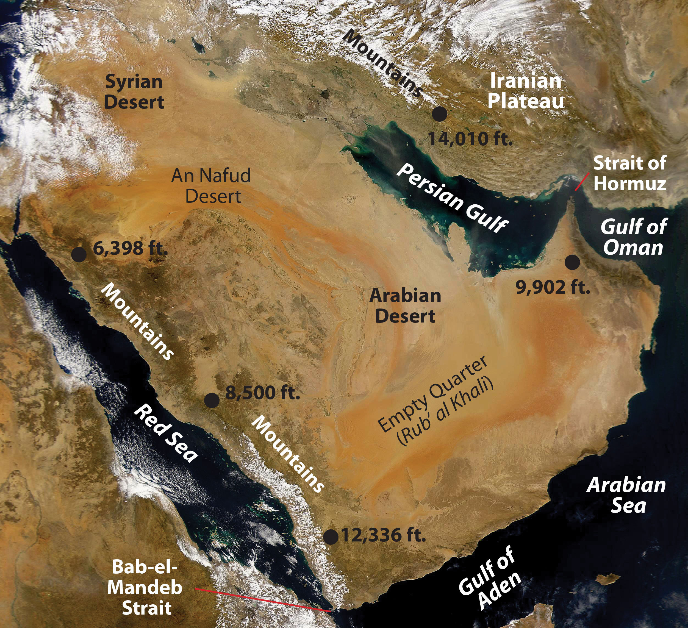Source: Satellite image courtesy of NASA’s Sea-viewing Wide Field-of-view Sensor project and John Nevard, http://commons.wikimedia.org/wiki/File:Arabian_Peninsula_dust_SeaWiFS-2.jpg.
Most of the people living on the peninsula are Arabs, and most of the peninsula’s countries are ruled by monarchs who rely on oil revenues to gain wealth. Minerals are mined in the mountains that dominate the peninsula’s western and southern regions. The highest peaks reach more than twelve thousand feet in elevation in northern Yemen. Of the countries on the peninsula, Yemen has the fewest oil resources and has had the sole democratically elected government. Saudi Arabia dominates the region in size and in oil resources. Islam, the major religion, infiltrates all aspects of Arab culture.
Figure 8.35 Political Map of the Arabian Peninsula
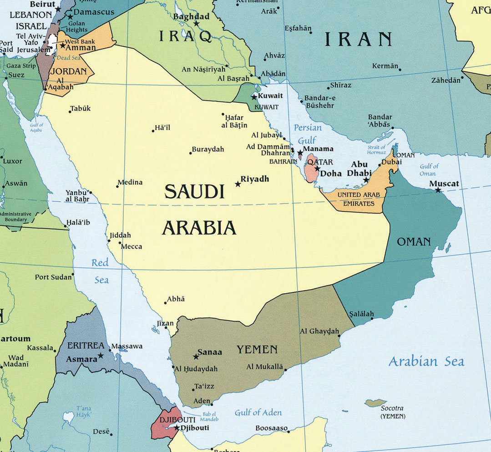Source: Map courtesy of University of Texas Libraries, http://www.lib.utexas.edu/maps/middle_east_and_asia/txu-oclc-192062619-middle_east_pol_2008.jpg.
The holy cities of Medina and Mecca are in Saudi Arabia, the birthplace of Islam. Islam first united the many traditional groups of Arabia with religion and then with the Arabic language. The region was further united after 1902, when Abdul Aziz Al-Sa‘ud and his followers captured the city of Riyadh and brought it under the control of the House of Sa‘ud. In 1933, the lands under the control of the king were renamed the Kingdom of Saudi Arabia. Saudi Arabia is an absolute monarchy. In 1938, US oil corporation Chevron found large quantities of oil in the region, which has sustained the royal family ever since. Aramco is the state-run oil corporation. Controlling about one-fifth of the world’s known oil reserves, the Saudi royal family claims considerable power.
The Saudi royal family gave safe haven to thousands of Kuwaitis, including the emir and his family, during the First Persian Gulf War (1991). Saudi Arabia allowed US and Western military forces to use bases on its soil during Operation Desert StormMilitary action to remove Saddam Hussein from power in Kuwait during the First Persian Gulf War in 1991.. Acquiescence to non-Muslims operating military bases on the same soil as the holy cities of Mecca and Medina gave extremist groups a reason to engage in terrorist activities. Out of the nineteen hijackers in the 9-11 attack in New York, sixteen were from Saudi Arabia. The Saudi government has been forced to step up its efforts against terrorism and domestic extremist groups.
The entire economy of Saudi Arabia is based on the export of oil, and more than 20 percent of the known oil reserves in the world are located in Saudi Arabia. The country is a key member of the Organization of Petroleum Exporting Countries (OPEC) and has been the world’s number one oil exporter. Millions of foreign workers in the petroleum industry make up a vital component of the country’s economy.
A high rate of population growth has been outstripping economic growth in Saudi Arabia. In 2010, more than one-third of the population was younger than fifteen years old, and family size was about 3.8 children. The unemployment rate is high, and there is a shortage of job skills in the workforce. The government has been working to shift its focus away from a petroleum-based economy and increase other economic opportunities; it plans to heavily invest in the necessary infrastructure and education to diversify its economy.
Saudi Arabia has made several efforts to move forward and put the country more in line with globalization efforts that are modernizing the other Persian Gulf States. The World Trade Organization accepted Saudi Arabia as a member in 2005. In 2008, the king implemented the initiative for interfaith dialogue in an effort to address religious tolerance and acceptance. The first woman was appointed to the cabinet, and municipal councils held elections for its members.
Figure 8.36 Modern Infrastructure Illustrated on Medina Road in Jeddah, Saudi Arabia
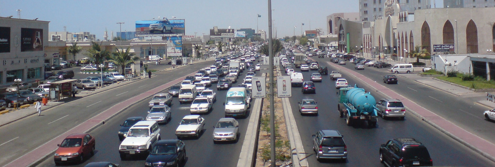Source: Photo courtesy of Ammar shaker, http://commons.wikimedia.org/wiki/File:DSC00093-m.r.JPG.
The royal family and most of the people in Saudi Arabia are Sunni Muslims. The country has a strong fundamentalist Islamic tendency. The law of the state is strict and supports conservative Islamic ideals. The Wahhabi branch of Sunni Islam has a major influence on culture. Activities such as gambling, alcohol consumption, and the promotion of other religions are outlawed. Alcohol and pork products are forbidden in accordance with Islamic dietary laws. Movie theaters and other Western-style productions are prohibited but can be found in areas where workers from other countries live in private compounds. Though movie theaters are restricted, movies on DVDs are not prohibited and are widely available. The dress code in Saudi Arabia strictly follows the Islamic principles of modesty. The black abaya (an article of clothing that looks like a cloak or robe) or modest clothing is appropriate for women. Men often wear the traditional full-length shirt and a headcloth held in place by a cord.
In Saudi Arabia, human rights organizations, legal associations, trade unions, and political parties are banned. The country maintains a tight censorship of all local media. The press is only allowed to publish what the government permits it to report. Communication with foreigners, satellite media, and Internet access are highly controlled. Those who speak out against the government can be arrested or imprisoned.
Figure 8.37 Women in Saudi Arabia
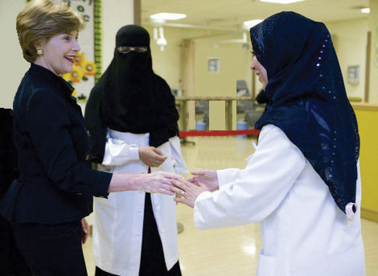Former First Lady Laura Bush meets medical staff in Saudi Arabia. Note the women’s attire.
Source: Photo courtesy of the White House, taken by Shealah Craighead, 2008.
The Sharia is the basic criminal code in Saudi Arabia, along with whatever law is established by the king. A wide range of corporal and capital punishments—from long prison sentences to amputations (arm or foot), floggings, and beheadings—are proscribed for legal or religious offenses. Trials are most often held in secret without lawyers. Torture has been used to force confessions that are then used to convict the accused. Torture techniques—including the use of sticks, electric shocks, or flogging—can be applied to children and women as well as men. Executions are usually held in a public place every Friday.
Men hold the dominant roles in Saudi society. Under strict Islamic law, women do not have the same rights as men, so Saudi women do not have the opportunities that women in many Western countries have. For example, it is not customary for a woman to walk alone in public; traditionally, she must be accompanied by a family member so as to not be accused of moral offences or prostitution. The mutawa’eenReligious police in Saudi Arabia that monitor social behavior in public. (religious police) have the authority to arrest people for such actions. The punishment could be as many as to twenty-five days in prison and a flogging of as many as sixty lashes.
As of 2011, the following restrictions have been made on women:
Saudi Arabia is a country steeped in tradition based on the heritage of its people, and many of the traditions regarding women were implemented to protect and care for them. However, as the forces of globalization seep into the fabric of society, many of these traditions are evolving and changing to adapt to the times and to a more open society. Women are asserting themselves in the culture, and many of these long-standing traditions are starting to break down. In late 2011, there were a number of women who organized to defy the ban on driving. One woman was arrested for driving a car and sentenced to ten lashes. Saudi King Abdullah then overturned the sentence and promised to support or protect women’s rights. There is no law stating that women cannot drive a vehicle. The taboo is based on tradition and religious views. More women have taken to the roadways in spite of the taboo against it.“Saudi Arabia: Woman Driver Verdict Reportedly Overturned By King,” Huffington Post, http://www.huffingtonpost.com/2011/09/28/saudi-arabia-woman-driver-verdict_n_985857.html. Saudi Arabia is an example of how Islamic fundamentalism is being challenged by modernity and democratic principles.
Kuwait, a small country located on the Persian Gulf, is a monarchy ruled by an emir from the royal family. Immense oil reserves have made Kuwait attractive to international oil investors. In 1961, Zapata Oil Company (now Pennzoil), owned by former US president George H. W. Bush, drilled the first offshore Kuwaiti oil well in the Persian Gulf. Thanks to ample oil revenues, the small Kuwaiti population (about three million people) has adequate social services. The country has a high standard of living. Education is free, and much of the labor base comes from non-Kuwaiti migrants. Petroleum exports account for most of the government’s income.
Kuwait has an excellent port at Kuwait City. However, one of the environmental problems with building a large city in the desert is the shortage of fresh water. To solve this problem, Kuwait has turned to the desalinization of seawater to provide for its domestic, agricultural, and industrial needs.
The United States and an international coalition fought the First Persian Gulf War in 1991 to “liberate” Kuwait from the grip of Saddam Hussein. It is compelling to note that the war was not about democracy. The war was about the control of oil resources. Under Hussein, Iraq invaded Kuwait and took over its enormous oil industry and port facilities. By taking over the oil assets, Hussein was in actuality taking over the oil assets of various international oil corporations. With the support of United Nations (UN) resolutions demanding that Hussein leave Kuwait, President George H. W. Bush organized an international military coalition to remove Hussein from Kuwait. The US mission was called Operation Desert Storm. The war started on bases in Saudi Arabia and pushed the Iraqi army out of Kuwait. When Hussein realized that he could not benefit from the oil in Kuwait, he had approximately 750 oil wells in Kuwait dynamited, which caused serious well fires and large lakes of oil flowing out onto the desert sands. The fires and spilled oil caused extensive environmental damage.
Figure 8.38 Desert Storm
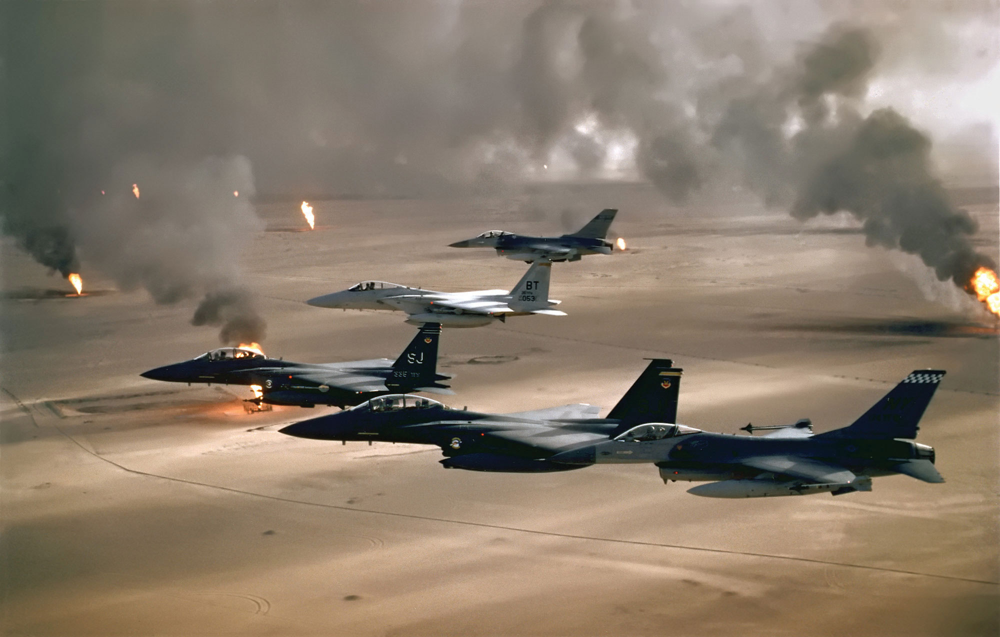US fighter jets in Operation Desert Storm fly over burning oil well fires in Kuwait. The fires were set by retreating Iraqi forces.
Source: Photo courtesy of the US Air Force, http://commons.wikimedia.org/wiki/File:USAF_F-16A_F-15C_F-15E_Desert_Storm_edit2.jpg.
Kuwait was not a democracy during the Persian Gulf War and is not a true democracy today. It is considered a constitutional emirateAn Islamic political unit governed by a ruler, chief, or sheik.. The emirA ruler or chief in Islamic countries., or head of the royal family, is the head of state. He appoints the prime minister and has a high level of control over the government. The emir has the authority to dissolve the National Assembly, which has members that hold seats by election. A number of groups wish to have a political voice in the government, including Islamists, business merchants, secular liberals, Shia activists, and a small number of local groups. Islamist groups are usually those who support an Islamic religious state as the desired type of government.
Kuwait had to invest nearly five billion dollars to reestablish the oil industry after the Persian Gulf War, but the emirate has recovered, and its economy is growing with the increased sale of exported oil. Kuwait has about 104 billion barrels of oil in known reserves. In 2010, the four largest export partners were Japan, South Korea, Taiwan, and Singapore, which are all economic powers in East Asia that have to import almost all of their energy and raw materials. The US has traditionally been Kuwait’s number one source of imported goods.
Bahrain is a small archipelago (group of islands) in the Persian Gulf. The country received its independence from Great Britain in 1971. Iran has made claims on the islands to no avail. Similar to other small monarchies in the region, Bahrain has lots of oil and a small population. Though more than 50 percent of the population is Shia, the country is opening up to democratic reforms. In 1999, elections were approved for a parliament, all political prisoners were released, and women were allowed to vote. The royal family, ruled by the king, has had an enormous degree of power over its government. Officially, Bahrain is a constitutional monarchy, but the king appoints the members of the upper house in its bicameral legislature. The first female was appointed to a cabinet position in 2004, which was an indication of the move toward openness to the globalization process and modernization. Some in the country think the implementation of these measures is still too slow.
Figure 8.39 Development in Bahrain
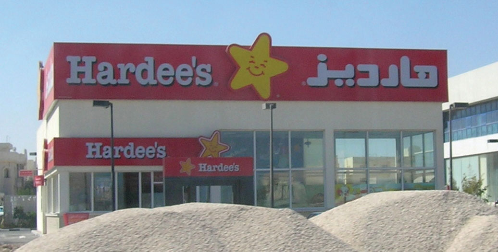This Hardee’s franchise in Bahrain is a clear example of Americanization of the Arabian Peninsula.
Source: Photo courtesy of Brent Gullet.
Most of Bahrain’s wealth is gained through the extraction of natural resources. Enormous natural gas reserves are located in Bahrain’s coastal waters, and oil now makes up about 60 percent of the export profits. The small land area size of the country, lack of sufficient supplies of fresh water, and few other natural resources has prompted a shift for Bahrain to expand into the financial sector. Islamic banking and financial services for the global marketplace have been an expanding sector of the economy. The objective in diversifying the economy is to reduce the dependency on oil as a future source of national wealth. In addition, the United States has entered into a free-trade agreement with Bahrain, which has attracted multinational corporations to do business in the region. Bahrain has been supportive of a US military presence for both protection and cooperation and is the permanent headquarters for the US Fifth Fleet navel operations. In a mutual defense agreement, some one thousand American navel officers and personnel are stationed on the island. Bahrain has been a frontline state for the US military in the Iraq War and the war in Afghanistan.
The country is also opening up development in the service sectors. Tourism is not what usually comes to mind when one thinks about the Arabian Peninsula, but Bahrain has been attracting millions of visitors yearly. The country’s authentic heritage is attractive to tourists from neighboring Arab states and the global community. The country boasts of nearly five thousand years of human activity. UNESCO has designated the Qal’at al-Bahrain castle as a World Heritage Site. The country has invested heavily in modern shopping malls and international sports facilities in an effort to modernize its country and attract more international events.
The citizens of Bahrain have had to work to balance the shift toward modernization and globalization with the strong Arab heritage and Islamic beliefs that have been the foundation of their culture. The term Middle East Lite has been applied to Bahrain because Bahrain has been investing in modern infrastructure but has worked hard to maintain its Arab heritage with a Persian Gulf identity that is more accepting and open to the outside world. The growing and prosperous middle class is more tolerant and liberal than many of its Middle East neighbors.
The same level of tolerance toward outsiders has not been witnessed within the country. The 2011 protests and demonstrations that swept across North Africa and the Middle East also occurred in Bahrain. The king, the royal family, and the majority in government follow the Sunni branch of Islam; however, most of the population follows the Shia branch of Islam. Many within the Shia community felt that they were being discriminated against and protested the lack of democratic reforms. Protests and demonstrations in Bahrain have prompted the government to call in military support from Saudi Arabia to help quell the uprising. A number of Shia mosques were reported to have been destroyed, and hundreds of people were detained by police. The protests and demonstrations in Bahrain are more than just a conflict between Shia and Sunni, though this split has been a major concern for years. Many Sunni have participated in the demonstrations because they are in support of more democratic reforms as well.
The small peninsula jutting out from Arabia into the Persian Gulf is an Arab land in transition. Ruled by an emir who has supported democratic reforms, Qatar is moving forward with a globalization policy similar to other Westernized nations. Many of these reforms are similar to those in Bahrain and the United Arab Emirates (UAE). Oil and gas exports have fueled a building boom that has produced shopping malls, wide boulevards, and even a large US military base. Women are allowed to vote, Western clothing and products are permitted, and rap music can be heard in the streets. Though still politically restrictive in many ways, Qatar is more open than many of its neighbors. Qatar is also home to the Al JazeeraInternational news agency based in Qatar. news organization, which often balances out Western news programming. Al Jazeera is also allowed to report critically on its home country.
In the past few years, oil revenues have provided Qatar with a rapidly growing economy and a high standard of living. Proven reserves of oil and natural gas are enormous for such a small country. Qatar’s natural gas reserves are the world’s third largest. Qatar has been pursuing development of private and foreign investments in non-energy-related businesses, including banking and financial institutions.
Figure 8.40 Building Boom in Qatar City

Revenues from oil and natural gas are fueling the rapid development of this small peninsula that is rivaling core economic countries.
Source: Photo courtesy of Brent Gullet.
Modernization efforts have supported Qatar’s push for a greater emphasis on education. Infrastructure and financial support have been allocated to support educational reform, and university opportunities are expanding rapidly. Qatar University was founded in 1973, and in the last decade many more universities from Western countries have opened up branch campuses in Education City, which was established to advance Qatar’s educational reform goals. The emir’s second wife has actively promoted educational reforms and has encouraged women to pursue higher education to excel in their careers. She has also created greater visibility for women in public roles and has broken through some of the cultural barriers and taboos that have restricted women in other conservative Islamic Arab countries.
Seven small Arab emirates joined together in 1971 to form the UAE. Each emirate is an absolute monarchy ruled by a sheikAn Arab chief.. The UAE has been integrating its economy with the global marketplace and has established a high standard of living for its people. Two of the emirates—Abu Dhabi and Dubai—possess most of the oil reserves. Abu Dhabi is the capital city and consists of 87 percent of the land area in the UAE. The head of the royal family in this emirate is considered the head of state for the UAE.
Figure 8.41 The Seven Emirates of the UAE
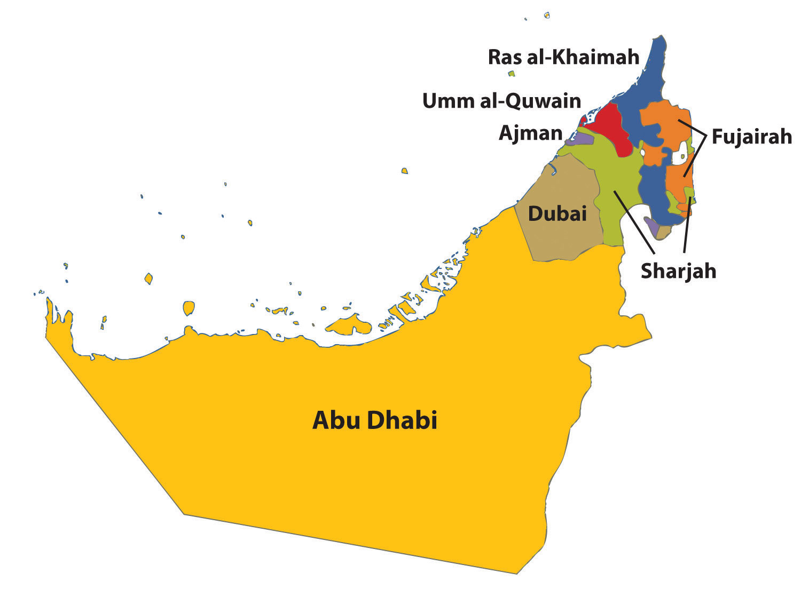It is evident that one emirate, Abu Dhabi, dominates in terms of square miles of physical area.
Dubai has turned its small emirate into an international trade center. The emirate has used its oil reserves to promote trade and commerce. Dubai built itself a world-class port facility equaling that of Hong Kong or New York. As a free-trade zone, there are no taxes or tariffs, so international corporations use the location as a trade center to bring high-volume buyers and sellers together. Dubai has been looking ahead to its future when the oil runs out. The creation of an international trade center would be a means to gain economic income when the revenue from the sale of oil diminishes.
Oil wealth and the need for workers have opened up economic opportunities in the UAE that have attracted laborers and businesspeople from many parts of the world. Noncitizens make up about 80 percent of the population; about half the noncitizens are from South Asia, and many are Muslims from India. The large number of laborers that are required to develop the infrastructure has created an imbalance between the percentage of men and women. There are about twice the number of men than there are women in Dubai. This has created an interesting dynamic for women in Dubai, who have more rights and opportunities than those in more conservative Islamic countries such as Saudi Arabia. The UAE presents an excellent example of people migrating from peripheral countries to a core region in search of opportunities and advantages in a globalized economic community.
The UAE has invested its oil income in building up its infrastructure to compete in a global economy. Hundreds of billions of dollars of construction projects are under way in Dubai alone. Dubai has the world’s tallest structure, the most expensive hotel, the world’s most expensive airport (when completed), and the world’s largest artificial islands. Dubai is even home to an indoor downhill ski resort complete with real snow. Other ventures such as the Dubailand entertainment complex and Dubai Sports City have also been proposed. The downturn in the world’s economic situation has slowed the development in this emirate but has not diminished its perspective on the future.
Figure 8.42 Free-Trade Zone of Dubai

The skyline of Dubai includes the tallest building in the world.
Source: Photo courtesy of Paul Wilhelm, http://commons.wikimedia.org/wiki/File:Dubai_2010.JPG.
Ruled by a sultanA sovereign of a Muslim state., the absolute monarchy of Oman on the southern end of the Arabian Peninsula also controls the tip of land next to the Strait of Hormuz. All oil tankers leaving the Persian Gulf must pass through this vital choke point. Mountains reach more than nine thousand feet in the eastern region of Oman, and rugged arid central plains cover the central region. The country gets plenty of sunshine and has some excellent beaches. Annual rainfall varies from four inches or fewer in the eastern sector to as much as twenty-five inches in the southwest. The climate is generally hot: temperatures can reach 120 °F from May to September.
Oman has been using its oil income to build infrastructure to benefit its people. The sultan of Oman has widespread support from his people and has built up goodwill from the international community for his investments in his country. He has built a free-trade zone with a giant container port facility, luxury tourist hotels, a good road system, and a first-rate international airport. He has also provided clean drinking water to the rural areas. Though Oman is not a democracy, the sultan has been positive role model for other monarchs. He has used Oman’s oil wealth to help his country develop and modernize. The mountains of Oman have additional natural resources such as gold, marble, and copper.
A lack of fresh water is a concern for Oman. The nation has limited renewable water resources. More than 90 percent of the water available is used in agriculture, and the rest is used for industry and domestic consumption. Fresh water is piped throughout most of the country, but shortages occur at times because of droughts and limited rainfall. Environmental problems have also arisen in Oman. For example, irrigation operations have caused soil conditions such as a salt buildup. Oil tankers traveling through the Strait of Hormuz and along the coast in the Gulf of Oman have leaked oil, which has washed up on coastal areas where attractive beaches are located. The higher level of exploitation of the environment by a growing population has exacted a toll on the organisms that live in the fragile desert ecosystems. Mammals, birds, and other organisms are in danger of extinction, including the Arabian leopard, the mountain gazelle, and the Arabian oryx. The country may lose its biodiversity unless action is taken toward preservation.
Yemen is a mountainous country bordering Oman and Saudi Arabia. The tallest mountains on the peninsula—reaching more than twelve thousand feet in elevation—are located here. The four main regions of Yemen are the eastern desert region of the Rub’ al Khali; the Eastern Highlands south of the Rub’ al Khali; the Western Highlands, which have the highest peaks; and the western coastal plains. The Western Highlands receive about thirty inches of rain per year, while the eastern desert received almost no rainfall. A number of volcanic islands are located off the coast. A volcano on one of the islands erupted as recently as 2007. This region is an extension of the rift valley system coming out of East Africa.
Figure 8.43 Four Physical Regions of Yemen

The highest peak in the Western Highlands is 12,028 feet in elevation.
Source: Map courtesy of CIA World Factbook.
The economy has traditionally been based on agriculture. Most of the farmland is in the form of terraces cut into the mountainsides that trap rainwater as it flows down the slope from one terrace to the next. Food production is a primary concern because in 2010 the population was more than twenty-four million and increasing rapidly. The arid land has few trees, but firewood is in high demand for cooking. The demand for firewood has caused deforestation, which in turn has caused serious soil erosion and damage to the mountain terraces that produce the food. Yemen is facing serious environmental concerns. The fast-growing population will only put more pressure on the environmental systems. On the positive side, oil and natural gas reserves are being found in some quantities, which will assist with the economic conditions and help supply the energy needed in the future.
Women in Yemen do not have the opportunities available in some of the more urbanized and modernized Gulf States. The contrast between the rural dynamics of Yemen and the urban culture of Dubai provides an excellent example of a rural versus urban or a core versus peripheral spatial relationship. The basic formula of family size and income levels applies to Yemen. In 2010, the fertility rate declined to 4.8 from more than 7.0 in 2000.“Total Fertility Rate (Children Born/Woman),” IndexMundi, http://www.indexmundi.com/g/g.aspx?c=ym&v=31. Rural-to-urban shift is causing cities within Yemen to grow at an increasing rate. Large family sizes are forcing young people to seek out opportunities and advantages in the cities or in other countries. The situation is only going to intensify, as the population of Yemen is projected to reach sixty million by 2050 at the current rate of increase.
Yemen has a democratically elected government that came about when North Yemen and South Yemen merged into one country to create a democratic republic in 1990. The population of Yemen is about 40 percent Shia and 60 percent Sunni. Yemen sided with Iraq and Saddam Hussein in the First Persian Gulf War in Kuwait, which resulted in Saudi Arabia expelling thousands of Yemeni workers. Yemen and Saudi Arabia have had a long-standing territorial dispute and only recently agreed on the desert border between the two countries. As the lone democracy on the peninsula, Yemen contrasts with the more conservative Islamic states and monarchies such as Saudi Arabia that are more common in the Middle East. Poor, rural, and agriculturally based, Yemen does not fit the mold of the typical oil-rich sheikdom of the region.
The cultural forces within Yemen demonstrate the dichotomy between modernization with democratic reforms and fundamentalist Islamic tendencies. Stability in Yemen is critical for the security of the regional waterways. In the past decade, piracy against ships off the coast of Somalia has increased, and many ships have been boarded and taken hostage by pirates demanding high ransoms for the release of the ship and crew. Security in the region is critical to support safe passage for international shipping activity through the Gulf of Aden and the Bab-el-Mandeb Strait.
Yemen experienced civil unrest and citizen protests in the spring of 2011 similar to those in the other Arab countries. The protests and demonstrations targeted political corruption, economic conditions, and high unemployment. During this time, the government was also looking to modify its constitution. The protesters shifted their focus to call for the president of Yemen to resign after twenty-one years in power. The president and government resisted, and the conflicts turned more serious. Clans not loyal to the president sided with the protesters, and the Yemeni president was seriously injured in a military clash. He was flown to Saudi Arabia for medical treatment. When the president recovered and returned to Yemen he still refused to step down. The country continues to adjust to the situation.
Figure 8.44 The Capital of Yemen
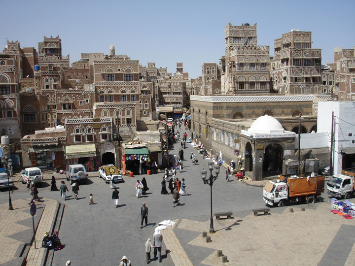Sana’a, an ancient city, is the capital of Yemen and the largest city, with a population of more than two million people.
Source: Photo courtesy of stepnout, http://www.flickr.com/photos/stepnout/2345728292.
Identify the following key places on a map:
Figure 8.45 The Tigris and Euphrates Rivers and the Shatt al-Arab Waterway between Iraq and Iran

Source: Map courtesy of CIA World Factbook.
Iraq lies in the Fertile Crescent between the Tigris and Euphrates Rivers, where the ancient civilizations of Mesopotamia were established. Ancient cities such as Nineveh, Ur, and Babylon were located here. Present-day Iraq and Kuwait were established out of the British Mandate territory gained following Britain’s defeat of the Turkish Ottoman Empire. Britain established straight-line political boundaries between Iraq and Jordan, Syria, and Saudi Arabia. These types of boundaries are called geometric boundariesPolitical boundaries based on straight lines rather than physical features. because they do not follow any physical feature. In 1961, when Britain withdrew from the region, the emir controlling the southern region bordering the Persian Gulf requested that Britain separate his oil-rich kingdom as an independent country. This country became Kuwait, and the rest of the region became Iraq. After a series of governments in Iraq, the Baath party came to power in 1968, paving the way for Saddam Hussein to gain power in 1979.
Figure 8.46 Iraq’s Divisions of Islam as of 2008

The two ethnic divisions are Arab and Kurd. The two religious divisions of Islam are Shia and Sunni. Karbala and Najaf both have holy sites for Shia Muslims.
In 1980, a disagreement arose over the Shatt al-Arab waterway in the Persian Gulf on the border between Iraq and Iran, and the feud led to war between the two countries. The people of Iran are not Arabs; their ethnic background is Persian. Most Iranians are Shia Muslims. Saddam Hussein and his Baath party were Arabs and Sunni Muslims. Ethnic and religious differences thus fueled the conflict. The Shatt al-Arab waterway was quickly filled with wrecked ships. The local battle escalated into an all-out war, which ended in 1988 without anyone declaring a victory. The Iran-Iraq War was as close to World War III as the world has ever seen, with more than a million casualties and a cost of more than one hundred billion dollars. World powers aligned themselves with one side or the other. Before the war, the Iranian government had been taken over by Islamic fundamentalists who opposed the US intervention in the region; therefore, in the Iran-Iraq War, the United States supported Hussein and provided him with industrial supplies and materials.
After the Iran-Iraq War, Saddam Hussein looked to Kuwait to gain new oil wealth and expand access to the Persian Gulf. By taking over Kuwait, Iraq would gain an excellent port on the Persian Gulf and earn more income from oil reserves. Hussein accused Kuwait of slant drilling oil wells along the Iraqi border and removing oil that was legally Iraq’s. It was common knowledge that both sides were engaged in this practice, but it was the excuse Hussein needed to invade Kuwait and reclaim it as the nineteenth province of Iraq.
In 1990, the Iraqi military invaded and occupied Kuwait. Though the world community opposed this action, it was not until Hussein nationalized all the oil assets of the international oil corporations that resistance was organized. Under the leadership of US president George H. W. Bush, the United Nations (UN) organized a military coalition to remove Hussein from Kuwait. On January 16, 1991, Operation Desert Storm began. After forty-five days of fighting, Iraq was overwhelmingly defeated and its military was ousted from Kuwait. This was a major victory for the coalition. It was during this time that President Bush publicly announced the emergence of the potential New World Order. Kuwait was not a democracy but a monarchy ruled by an emir. Clearly, the war was not a war over democracy; it was a war over the control of resources.
When it became evident that Hussein would lose Kuwait, his forces dynamited all the oil facilities and set all the oil wells in Kuwait on fire. His position was that if he could not have the oil, then nobody would. This was one of the worst environmental catastrophes regarding oil on record. Oil flowed into the Persian Gulf and covered the water’s surface up to three feet thick. Most mammals, birds, and organisms living on the water’s surface died. Oil flowed out onto the desert sand into large petroleum lakes. The air pollution caused by burning oil wells dimmed the sun and caused serious health problems.
To keep Iraq from breaking apart after Operation Desert Storm, coalition forces allowed Hussein to remain in power. Ethnically and religiously, Iraq is divided into three primary groups that generally do not get along. Sunni Arabs dominate central Iraq in a region often referred to as the Sunni Triangle, which includes the three cities of Baghdad, Tikrit (Hussein’s hometown), and Ramadi. Sunnis were the most loyal to the Hussein government. Southeastern Iraq is dominated by Arabs who follow the Shia division of Islam, which is also followed by most of Iran’s population. A group that is ethnically Kurdish and follows the Sunni division dominates northern Iraq. Kurds are not Arabs or Persians; rather, they originated from somewhere in northern Europe centuries ago with their own religion, language, and customs. Many have converted to Islam.
Hussein was a Sunni Muslim, and when he was in power, he kept the other two groups in check. He used chemical weapons on the Kurds during the Iran-Iraq War. In 1988, he used chemical weapons on the Kurdish town of Halabja and killed about 10 percent of the eighty thousand who lived there. Thousands of Kurds died in other attacks, and thousands more continue to suffer serious health effects. After Operation Desert Storm, Hussein pushed the Kurds north until the UN and the United States restricted him at the thirty-sixth parallel, which became a security zone for the Kurds. The Arab Shia population in the south often clashed with Hussein’s military in an attempt to gain more political power, and Hussein subjected them to similar harsh conditions and treatment.
Figure 8.47 Homelands of the Kurdish People, Indicated by the Shaded Areas

Future Kurdistan would be the main portions in Iran, Iraq, and Turkey and a corner of Syria. The city of Diyarbakir in Turkey would be the Kurdish capital city.
Source: Map courtesy of University of Texas Libraries, http://www.lib.utexas.edu/maps/middle_east_and_asia/kurdish_86.jpg.
The Arab Shia population in the southeast makes up most of the Iraqi people. The two main cities of Karbala and Najaf contain holy sites for Shia followers worldwide. The Shia population is three times larger than the Kurdish population in Iraq; more Kurds live outside Iraq than live in Iraq. The Kurds are the largest nation of people in the world without a country. About twenty-five million Kurds live in the Middle East, and most—about fourteen million—live in Turkey. About eight million Kurds live in Iran, about seven million live in Iraq, and a few others live in neighboring countries. At the 1945 conference of the UN, they petitioned to have their own country called KurdistanProposed state to include all Kurds in the Middle East. carved out of Iran, Iraq, and Turkey, but they were denied. You will recall from Section 8.4 "Israel and Its Neighbors" that Israel was approved to become a nation at the same UN conference.
After the September 11, 2001, attack on the United States, there was a renewed interest in weapons of mass destruction (WMD)Chemical, nuclear, or biological weapons that could cause the deaths of innocent civilians on a massive scale.. Knowing that Hussein had used chemical weapons on the Kurds, the Iranians, and the Shia, there was a concern that he would use them again. UN Weapons inspectors in Iraq never could confirm that Hussein retained WMD. They had been destroyed, moved out of Iraq, or hidden. US president George W. Bush decided to invade Iraq in 2003 to remove Hussein from power. In the invasion, Hussein’s two sons were killed and Hussein was captured. One aspect of the invasion plan was to use Iraq’s vast oil reserves to help pay for the cost of the war, which quickly ballooned to more than a billion dollars a week. Fundamentalist Islamic insurgents made the war difficult.
The US invasion of Iraq brought about the removal of the Baath Party from power and Iraq came under a military occupation by a multinational coalition. An Iraqi Interim Government was formed that assumed sovereignty in 2004. A new constitution was drafted and approved by vote of the Iraqi people. Elections were held and a new government was formed under the newly drafted constitution. Occupying troops continued to remain as the country struggled to adapt to the reforms. Insurgencies developed that brought about an increase in violence that peaked in about 2007. By 2010, the combat operations by occupying troops were ending and the country worked to sustain stable political conditions. Under an agreed upon mandate all combat troops were to withdraw as of the end of 2011. A number of US troops will remain in Iraq in an advisory capacity.
Figure 8.48 Soldiers from the 926th Engineer Brigade Combat Team and the Army 432d Civil Affairs Battalion Patrol in Baghdad’s District of Sadr City

The United States invaded Iraq in 2003 and removed Saddam Hussein from power.
Source: Photo courtesy of the US Department of Defense, taken by Tech Sgt. Cohen A. Young, 2008.
In geographic terms, the Persian Gulf War and the Iraq War were wars over resources—namely, oil. Wars have historically been fought over territory and resources. When the United States invaded in 2003, Hussein was contracting billions of dollars worth of projects to oil companies in France, Russia, and China. Other support projects were contracted out to other European countries. When the United States invaded, the contracts with were summarily canceled, and British and US oil contractors took over the projects.
Figure 8.49 News Reports of Iraqi Contracts at the Time of the US Invasion of Iraq

After the US invasion, many of the contracts Iraq had with other countries were canceled.
Source: New York Times, December 10, 2003.
Iraq is an example of the second wave of globalization. Neocolonialism has been the dominant force in Iraq’s economy since before the Persian Gulf War. Industrialization requires high energy demands; therefore, the industrialized countries of the world consume energy on a massive scale. Iraq is not a core economic country, but it holds vast petroleum reserves, making it vulnerable to exploitation by industrialized core countries. It is interesting to note that the Persian Gulf War, initiated in response to Iraq’s invasion of Kuwait, can be traced directly to globalism. It was Britain that established the straight-line borders separating Kuwait and Iraq. The war over the control of Kuwait in 1991 was a war over the control of resources, just as the ongoing competition between Sunni Muslims and Shia Muslims, for example, is a competition for the control of political power or resources and not a competition related to ethnic principles.
Figure 8.50 The Three Core Economic Areas of the World That Consume High Levels of Energy

The East African Community (EAC) is not an official organization but a core economic area.
Hussein proved to be a destabilizing force and a potential threat to the established so-called New World Order of global security and trade as outlined by US president George H. W. Bush. The removal of Hussein from power brought to the surface the competition between the trilateral powers of North America, Europe, and East Asia. It remains to be seen who will have control of or access to Iraq’s natural resources.
There are many connections between the administration of former US president George W. Bush and the international oil industry. Bush once owned the failed Texas oil company Arbusto Energy and was president of Spectrum 7 Energy Corporation, which bought out Arbusto. Bush was also on the board of Harken Energy Corporation when it bought out Spectrum 7 Energy. Bush’s father, former US president George H. W. Bush, owned the Zapata Oil Company, which drilled the first offshore Kuwaiti oil well and later merged to become Pennzoil. US vice president Dick Cheney was CEO of Halliburton, the world’s most extensive oil service company. Commerce Secretary Donald Evans was former CEO of Tom Brown Inc., an independent oil and gas company based out of Denver. Secretary of State Condoleezza Rice was a Chevron Corporation board member and had an oil supertanker named after her—the Condoleezza Rice. The former US secretary of state under former president George H. W. Bush (Sr.) was James Baker III, who had been a central attorney for an oil consortium building one of the largest oil pipelines in Central Asia. President George W. Bush appointed Zalmay Khalilzad, a former aide to the American oil company UNOCAL, as special envoy to Afghanistan, then as ambassador to Iraq, and then to the UN.
Figure 8.51 Vice President Dick Cheney and Secretary of State Condoleezza Rice During the US Presidential Administration of George W. Bush

Source: Photo courtesy of the White House, taken by David Bohrer, 2006.
The globalized economy forces political units to compete over valuable resources, which often results in the blending of those in leadership roles in the corporate world with those in positions of power in the political arena. The top personnel in the George W. Bush administration (2001–9) is an example of the relationships that develops between corporate leaders and political leaders. In this case, the relationship centered on the oil industry.
Turkey is the only remaining country of the vast Ottoman Empire, which ruled the region for seven hundred years (1299–1923 CE). When the empire was at its peak in the sixteenth and seventeenth centuries, it controlled parts of Europe, North Africa, the Middle East, and Arabia. Located on the Bosporus—the straits that connect the Black Sea with the Mediterranean Sea—the ancient city of Constantinople was the capital of the Ottoman Empire. Called Istanbul today, this city is the largest in Turkey, but it is not the current capital. Turkey moved its capital to Ankara on the Anatolian Plateau, which is centrally located in Turkey.
Turkey has a small portion of its land area on the western side of the Bosporus to claim its connection to Europe. Most of Turkey’s land area is a part of the Asian continent, and Turkey has often been referred to as Asia Minor. Mountains on Turkey’s eastern border with Armenia include Mount Ararat, which is the highest peak in the country at 16,946 feet in elevation. Legend has it that Mount Ararat was the resting place of the legendary Noah’s ark. The people of Turkey are neither Arab nor Persian; they are Turkish and speak the Turkish language. As much as 90 percent of the Turkish population is Sunni Muslim, which is similar to many of the other Muslim countries in the Middle East.
Figure 8.52 Turkey

The map shows the portion of Turkey in Europe to the west, the central Anatolian Plateau, the Euphrates and Tigris Rivers, and Mount Ararat on the Armenian border.
Source: Map courtesy of CIA World Factbook.
Turkey is an established secular democracy with a democratically elected political leadership. To maintain its democracy, it has had to deal with Islamic fundamentalists, who often have supported a shift to an Islamic religious state. Turkey has also had to negotiate with its neighbors, Syria and Iraq, over water rights to the Tigris and Euphrates Rivers, which originate in Turkey but flow through the other countries. Turkey has built dams on these rivers, much to the dismay of its neighbors, who want to use more of the water.
Turkey borders northern Iraq and was home to fifty-six million Turks and fourteen million Kurds as of 2010. The Kurdish claim of a homeland in eastern Turkey has not been recognized by the Turkish government. Open rebellion has been expressed by Kurdish groups wishing to become independent of Turkey, but the Turkish government has oppressed any movement toward independence. Many Kurds have migrated to Istanbul in search of work. They live and work in Istanbul and send money back to their families in eastern Turkey. The large city of Diyarbakir in eastern Turkey is predominantly Kurdish and is considered by many Kurds as the city that would be their capital if they had their own country of Kurdistan.
Figure 8.53 A City Park outside the Blue Mosque in Istanbul

The capital city of Turkey is Ankara, which is located in the center of the country. Istanbul remains the primate city of the country and is home to various world-class mosques.
Source: Photo courtesy of Jeremy Vandel, http://www.flickr.com/photos/jeremy_vandel/3742592396.
Turkey is a member of the North Atlantic Treaty Organization (NATO) and has been a US ally. The United States has been allowed to have military bases in Turkey, which were helpful in Operation Desert Storm during the First Persian Gulf War. In spite of being allies, Turkey did not allow the US military to use these bases as direct invasion points when the United States invaded Iraq in 2003. The Iraq War is a major concern for Turkey, since Turkey has a major stake in the stability of the Middle East. Possessing a small portion of its land area in Europe and being a member of NATO provides Turkey with an opening to join the European Union (EU), but so far it has been denied membership, mainly because of Turkey’s controversial human rights record, conflicts with the Kurds, disagreements with Greece over Cyprus, and low economic indicators. Conditions are improving, and at some future point Turkey may have an opportunity to join the EU.
To date, the EU does not have an Islamic country in its membership; Turkey may be the first. The country has various ways of gaining wealth that could help support Europe’s other industrial activities. Turkey grows large quantities of food in the central Anatolian Plateau; vast fields of grain extend across this central plateau. Turkey also has some oil resources in the east and minerals in the mountains bordering Armenia and Georgia.
The island of Cyprus in the eastern Mediterranean Sea is officially a part of Europe and a member of the EU. The island is separated by the Green Line, monitored by the UN, which divides the Greek-dominated south from the Turkish-dominated north. The two sides have been separated since a civil war in 1974. Turkish groups in the north have declared their half of the island the independent Turkish Republic of Northern Cyprus. Turkey is the only country that recognizes this proclamation; the rest of the world considers the whole island the Republic of Cyprus.
Figure 8.54 Divided Cyprus

The island of Cyprus is divided by the Green Line, which is monitored by the UN. Turkish Cypriots control the north and have declared it the Turkish Republic of Northern Cyprus. Greek Cypriots control the southern half of the island. The whole island is considered one country by the UN, which does not recognize the Turkish Cypriots’ claim to independence.
Source: Map courtesy of CIA World Factbook.
Iran covers a physical area larger than the US state of Alaska. It is a land of mountains and deserts: Iran’s central and eastern regions are mainly desert with few inhabitants, and the northern and western regions of the country are mountainous. The Elburz Mountains in the north around the Caspian Sea reach as high as eighteen thousand feet in elevation near the capital city of Tehran. The Zagros Mountains run along the border with Iraq and the Persian Gulf for more than nine hundred miles and can reach elevations greater than fourteen thousand feet. Similar to the Atlas Mountains in the Maghreb, Iran’s mountains trap moisture, allowing minor agricultural activities in the valleys. Most of Iran’s population lives in cities along the mountain ranges. Qanats—systems of shafts or wells along mountain slopes—bring water from the mountains to the valleys for irrigation and domestic use.
Figure 8.55 2010 Population Estimates for the Ethnic Triangle of the Middle East, with Egypt, Turkey, and Iran Anchoring Each Corner

Source: Updated from map courtesy of University of Texas Libraries, http://www.lib.utexas.edu/maps/middle_east_and_asia/txu-oclc-192062619-middle_east_pol_2008.jpg.
Iran was once the center of the Persian Empire, which has its origins as far back as 648 BCE, and the country was called Persia until about 1935. The Ethnic Triangle of the Middle East consists of Persians in Iran, Turks in Turkey, and Arabs in Arabia (see Figure 8.55 "2010 Population Estimates for the Ethnic Triangle of the Middle East, with Egypt, Turkey, and Iran Anchoring Each Corner"). Most of the seventy million people in Iran are Persian. Iran has a long history with the ancient Persian Empire and the various conquering armies that followed it. During the rise of Islam, Iran had major contributions to the arts, mathematics, literature, philosophy, and science. The highly advanced carpet-weaving traditions from centuries past are but one example of the advancements in design and the technical expertise of the people. The country’s Persian identity and culture continued throughout the centuries under different ruling powers. The Persian language remains and is a branch of the Indo-European language family. Arabic is widely used as a second language and a language used in science, which was helpful in reaching a broader audience and reaching out to the regional community with academic and scientific findings.
Figure 8.56 Main Mountains and Desert Areas in Iran

Source: Updated from map courtesy of University of Texas Libraries, http://www.lib.utexas.edu/maps/middle_east_and_asia/iran_rel_2001.jpg.
In 1971, Iran celebrated the 2,500th anniversary of Persia’s first monarchy. The monarchy was ruled by a shah, which is a title for the sovereign leader in Iran similar to a king. The shah’s royal family ruled Iran from 1923 to 1979, when Islamic fundamentalists took control of the government. It was during this revolution on November 4, 1979, that Ayatollah Ruhollah Khomeini, who had previously been exiled by the shah, urged Iranians to oppose US activities in Iran. Iranian students stormed the US embassy and took US citizens hostage. Fifty-two Americans were held for 414 days during the US presidency of Jimmy Carter. The hostages were released the day that US president Ronald Reagan took office. Khomeini indicated he had not been aware of the students’ plan but supported it. This is one reason the United States backed Saddam Hussein in the Iran-Iraq War of the 1980s. Khomeini ruled Iran until his death in 1989. Since then, Iran has been an Islamic state with an ayatollah as the Supreme Leader. An ayatollah is a high-ranking Shia cleric that is an expert in the Islamic faith and the Sharia (Muslim code of law based on the Koran). There are cases where women have reached the same status as an ayatollah and known as Lady Mujtahideh. Approximately 90 percent of Iran’s population follows the Shia division of Islam.
On the international front, Iran’s leadership has indicated a drive to develop nuclear weapons and use them against Israel, which has caused concern in the global community. The government of Iran does not recognize the legitimacy of the nation of Israel. US president George W. Bush included Iran, along with Iraq and North Korea, in his 2002 Axis of EvilTerm used in a 2002 speech by US president George W. Bush referring to Iraq, Iran, and North Korea for their aspirations to acquire chemical, biological, or nuclear weapons and their support of terrorist activities. speech, the focus of which was the lack of democratic freedoms and the restrictive measures of the Islamic fundamentalist government. Iran is similar to Saudi Arabia in its restrictions of civil rights. A number of countries including the United States have placed trade sanctions against Iran regarding any materials associated with nuclear weapons or missiles. The US sanctions extend to an almost total trade embargo against Iran stemming from the 1979 revolution.
Open protests expressing a need for change have periodically erupted in the streets of Tehran. Ultimately, protesters are seeking personal freedoms and a more open society. The Arab Spring of 2011 was a phenomenon that spread across North Africa, the Arabian Peninsula, and the Middle East. Iran was not immune from the impact of the protests and demonstrations that occurred in their neighboring countries, but Iran was different. First of all, Iranians are not Arab but Persian in their ethnicity. Their history and heritage creates a distinct identity that separates them from the rest of the region. Many Iranian citizens want the same outcomes that the protesters and demonstrators want in the countries experiencing the Arab Spring revolutions. The difference is that Iranians have been demonstrating and protesting issues with their government in the years before 2011. Political tensions in Iran have been high since the 2009 elections and even earlier. During the 2009 election in Iran, students and other individuals used the Internet, Twitter, and cell phones to organize a massive protest against the current president and in support of opposition candidates. The demonstrations were called the Twitter Revolution.
Figure 8.57 Twitter Revolution in Iran

During the 2009 election in Iran, students and other individuals used the Internet, Twitter, and cell phones to organize a protest against the current president and in support of opposition candidates. The demonstrations were called the Twitter Revolution.
Source: Photo courtesy of Hamed Saber, http://www.flickr.com/photos/44124425616@N01/3630995595.
Iran is at a crossroads in the conflict between conservative Islamic fundamentalists and Islamic reformers. The government of the Islamic state is controlled by Muslim clerics who tend to be more conservative in their rulings, but the young people are mainly on the side of the democratic reformers. Young people are becoming more familiar with Western culture. For example, the unofficial holiday of Valentine’s Day has become extremely popular in Iran and is celebrated by a large sector of the population, mainly young people. In an effort to curb the influence of Western culture, on February 13, 2011, the government of Iran officially banned all symbols or activities associated with Valentine’s Day. One claim was that the day was named after a Christian martyr and therefore was not supportive of Islam.
Iran has abundant oil and natural gas reserves that are being exploited to form the base of their economy. Iran holds about 15 percent of the world’s reserves of natural gas, which is second only to Russia.“Greatest Natural Gas Reserves by Country, 2006,” Infoplease, http://www.infoplease.com/ipa/A0872966.html. In 2010, the country was the fourth-largest oil exporter in the world and held about 10 percent of the world’s known oil reserves.http://www.opec.org/opec_web/static_files_project/media/downloads/publications/ASB2010_2011.pdf. The UN has classified Iran’s economy as semideveloped. The government has taken control of the oil and natural gas industry and implemented a type of central planning over many major businesses. Small-scale agriculture and village trading activities are not usually owned by the government. The Caspian Sea provides for fishing and has oil reserves under the seabed. Oil and gas revenues make up most of the state’s income. However, fluctuations in commodity prices have resulted in a more volatile income stream, and Iran’s manufacturing base has been increasing to support a more diversified economy.
Identify the following key places on a map:
Central Asia is a region in the Asian continent that extends from the mountains of western China to the shores of the Caspian Sea. Pakistan and Iran create the southern border of the region, and the vast expanse of Russia is to the north. Afghanistan is considered a part of the region even though it was never a formal part of the Soviet Union. Central Asia was located on what was known as the Silk Road between Europe and the Far East and has long been a crossroads for people, ideas, and trade.
Central Asia has an extremely varied geography, including high mountain passes through vast mountain ranges, such as the Tian Shan, Hindu Kush, and the Pamirs. The region is also home to the vast Kara Kum and Kyzyl Kum Deserts, which dominate the interior with extensive spans of sand and desolation. The expansive treeless, grassy steppes that surround the desert regions are considered an extension of the steppes of Eastern Europe. Some geographers think of the Eurasian Steppes as one single, homogenous geographical zone.
Under the sand and prairie grasses lay the some of the most extensive untapped reserves of gas and oil on the planet. Natural resources are the main attraction of the region driving the economic forces that determine the development patterns of individual countries. Multinational corporations have vigorously stepped up their activity in the region.
The political systems are adjusting from the old Soviet Union’s socialist policies to new democratic systems that are subject to high levels of authoritarian rule and corruption in business and politics.
The five countries of Kazakhstan, Uzbekistan, Turkmenistan, Tajikistan, and Kyrgyzstan were part of the former Soviet Union until its breakup in 1991. Today, with Afghanistan, they are independent countries that make up the region called Central Asia. The term stan means “land of,” so, for example, Uzbekistan is the land of the Uzbeks. Central Asia is also referred to as TurkestanAlternative term for the region of Central Asia named after the Turkish people who moved through the area centuries ago. because of the Turkish influence in the region. The people of Turkey did not originate from the Middle East; they originated from northern Asia. They swept through Central Asia and dominated the region on their way to the Middle East. The Turkish language and heritage have had the most significant impact on the people of Central Asia. Turkmenistan’s name is another reminder of the Turkish connection; it means “the land of the Turkmen.”
Most of the groups of Central Asia were nomadic peoples who rode horses and herded livestock on the region’s vast steppes. This way of life continued until the 1920s, when the Soviet Union forced many of the groups to abandon their lifestyle and settle on collective farms and in cities. Most of the people of Central Asia continue to identify culturally with their nomadic past. Central Asians who live in cities often demonstrate a mix of local and Russian culture in terms of dress and food because of the large influx of Russian populations in the region. More than six million Russians and Ukrainians were resettled into Central Asia during Soviet rule. Russian is often used as a lingua franca.
One of the primary ways in which people distinguish themselves culturally is through religious practices. Despite the area being part of the Soviet Union, where religious activities were discouraged, Islam was and still is the dominant religion. Most Central Asian Muslims are Sunnis.
Figure 8.58 Central Asia, Formerly Part of the Soviet Union
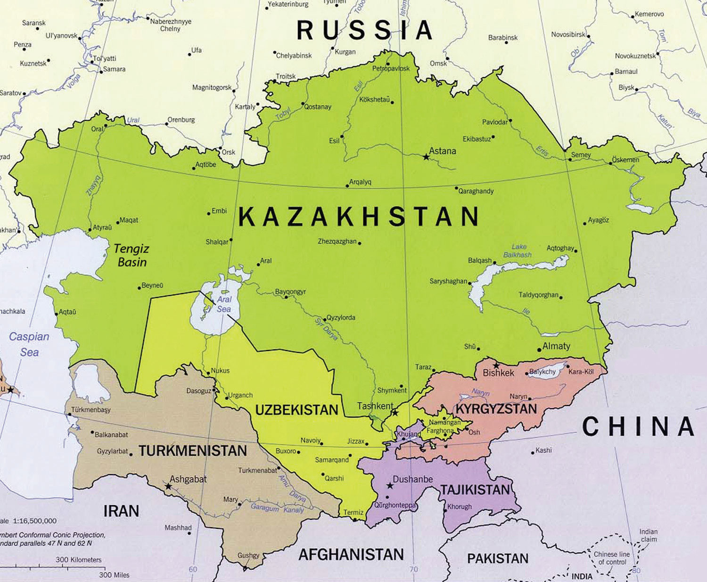Afghanistan is also usually included as part of Central Asia, though it was never officially part of the Soviet Union.
Source: Updated from map courtesy of University of Texas Libraries, http://www.lib.utexas.edu/maps/commonwealth/central_asian_common_2002.jpg.
The traditional people of Kazakhstan, who share a Mongol and Turkic heritage, moved into the Central Asia region sometime after 1200 CE. The expansion of the Russian Empire under the tsars integrated Kazakhstan and its neighbors, which eased their transition when the tsarist system of Russian government gave way to the Soviet Union. The influx of Russian people and culture had a major influence on Kazakhstan.
Figure 8.59 Deserts of Central Asia
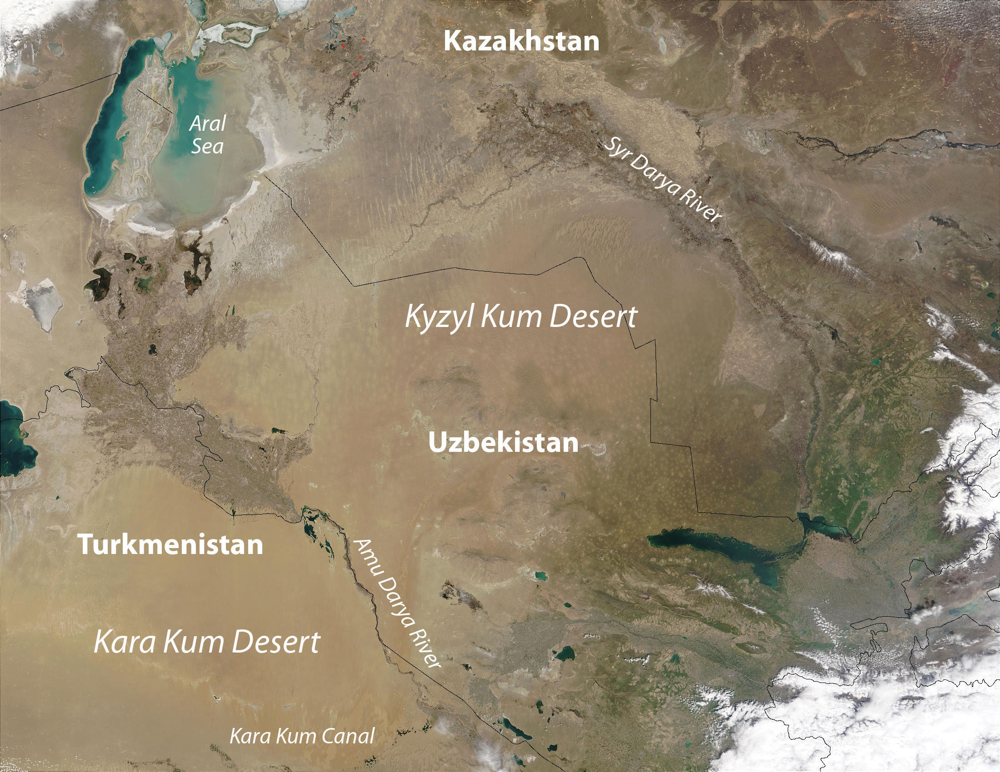The Aral Sea is decreasing in volume because of water being diverted from the two rivers to be used for irrigation of desert lands to grow enormous crops of grains and cotton.
Source: Updated from map courtesy of NASA, http://visibleearth.nasa.gov/view_rec.php?id=5227.
Kazakhstan gained independence from the Soviet Union in 1991, thereby creating the world’s largest landlocked nation. It is the ninth-largest state on the planet in terms of square miles and is larger in physical area than of all of Western Europe. This vast land is host to a wide variety of physical landscapes, including the high, snow-capped peaks of the ranges on the Chinese border. The western portions are lowlands bordering the Caspian Sea. The seemingly endless grasslands of the interior are one of the largest steppe regions in the world. The steppe region has a semiarid type B climate. A large portion of southern Kazakhstan is desert, including the northern regions of the Kyzyl Kum Desert. Colder type D climates are found in the northern regions of the country.
The steppe produces grain in large quantities and other agricultural products, while the productive mining of minerals adds to the national wealth. Kazakhstan ranks high in the mining of many metals and uranium. Even diamonds are found here. Oil and natural gas extraction accounts for the largest sector of the country’s economy and generates the largest export income. The Tengiz basin around the northeast shores of the Caspian Sea is home to extensive petroleum reserves. Oil pipelines are expanding to transport the oil to port locations and other countries, including China. The economy of Kazakhstan has been larger than the economies of all the other Central Asian states combined.
Figure 8.60 Cultural Traditions in Kazakhstan
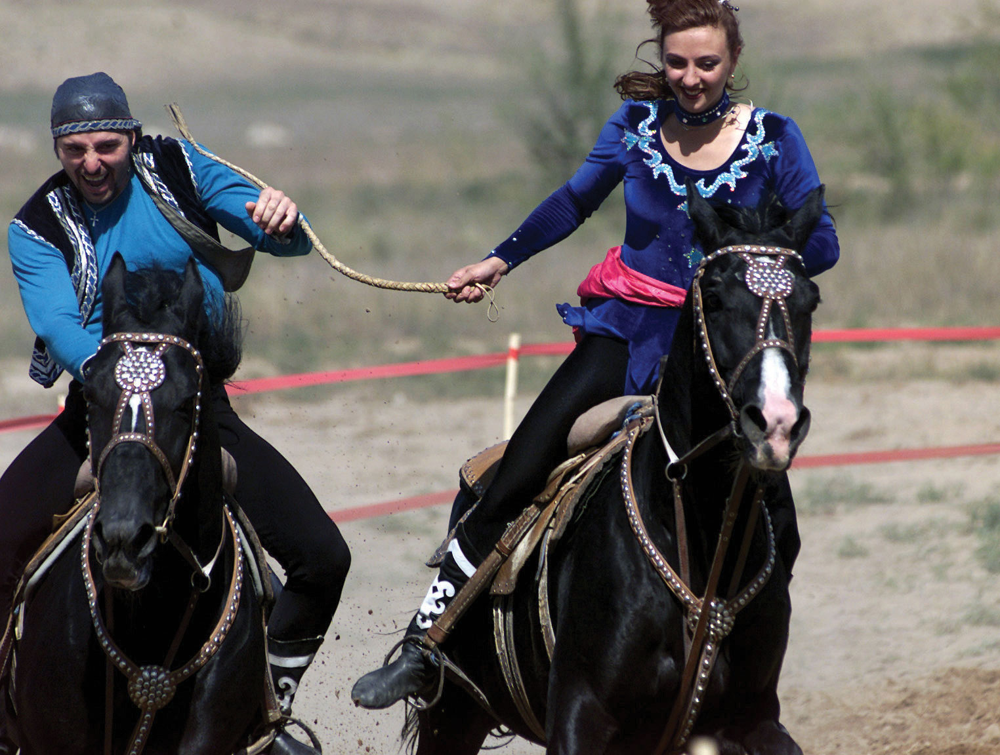Kazakh performers demonstrate a cultural tradition of a game called “Catch a Girl,” in which the two riders (male and female) take off on horseback and try to catch each other. The female rider whips the male until she is caught. If the male catches the female, he is rewarded with a kiss.
Source: Photo courtesy of the US Air Force, http://commons.wikimedia.org/wiki/File:Catchthegirl.JPG.
Kazakhstan also has a forward capital. During the Soviet era, the capital was located in the southeast at Almaty, but after gaining independence in 1991, the capital was moved north to Astana to ensure that the Russian-dominated northeast would be monitored against devolutionary forces that desiring to secede and become part of the Russian Republic.
Uzbekistan physically borders all the Central Asian countries. It is the most populous Central Asian country, with a population that exceeds twenty-seven million. Uzbekistan’s eastern boundary extends deep into Kyrgyzstan territory. The boundary lines were created during the Soviet era to provide the central government with more control over its republics by politicizing enclaves to their benefit. Geographers call Uzbekistan a doubly landlocked nation because all the countries that surround it are also landlocked. The main source of fresh water comes from the Eastern Highland regions. The main rivers have been heavily diverted for irrigation and are often depleted before reaching their destination at the Aral Sea.
Cotton is the main agricultural crop. Uzbekistan is one of the top producers of cotton in the world and is a major exporter to world markets. The central and western regions have mainly arid desert climates and rely heavily on the fresh water flowing in from the mountains. Agriculture employs a full one-fourth of the population and accounts for one-fourth of the gross domestic product (GDP). The extraction of gold, minerals, and fossil fuels are also prime economic activities. The country has been transitioning from the old Soviet Union’s command economy, which was controlled by the central government, to a market economy competing in a global marketplace.
Uzbekistan is a country of young people: about one-third of the population is under the age of fifteen. Education was heavily emphasized during the Soviet era; as a result, about 99 percent of the population is literate—though about one-third of the people still live in poverty. Islam emerged in this country after Uzbekistan won its independence in 1991 after the fall of the Soviet Union. In a culture of openness, Islam has risen in prominence to the point that approximately 88 percent of Uzbeks profess Islamic beliefs. The most commonly spoken language is Persian/Farsi.
Samarkand and the country’s capital city, Tashkent, are located in the eastern core region, which is home to most of the population. Tashkent has an unofficial population of more than three million people. The city, which sits on the confluence of a local river and its tributaries, started as a caravanserai, or oasis for trade, along the Silk Road. Samarkand is Uzbekistan’s second-largest city and is most noted as the central city of the Silk Road as well as an important historical city for Islamic scholars. In 2001, UNESCO declared this 2,750-year-old city a World Heritage Site. It is one of the oldest continually inhabited cities in the world and has been one of the more important cities in Central Asia. The historical architecture is heavily influence by Islamic styles from Iran. The region around Bukhara, Uzbekistan’s fifth-largest city, has been occupied for at least the last five thousand years. Bukhara was another important city on the Silk Road and is known for its Asian carpet and textile industry. This region has been an important cultural, economic, and scholarly center for most of its known existence.
Figure 8.61 Bibi Khanym Mosque, Samarkand, Uzbekistan
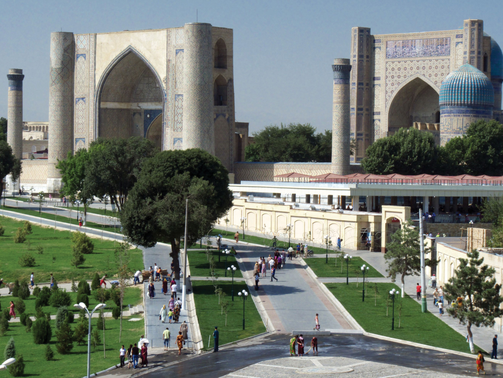Samarkand, called the crossroads of culture, is located on the ancient Silk Road to China. The city is a UNESCO World Heritage Site.
Source: Photo courtesy of Laura and Fulvio, http://www.flickr.com/photos/lfphotos/4934027017.
Central Asia’s shrinking Aral Sea is shared by Uzbekistan and Kazakhstan. The sea was once the fourth-largest body of water in the world, but it has been reduced to a fraction of its original area. In 1960, the Aral Sea covered about 26,254 square miles, an area larger than the size of the US state of West Virginia. By 2009, the sea covered less than 10 percent of the same area. The entire eastern portion of the sea has become a sand desert, complete with the deteriorating hulls of abandoned fishing vessels. The loss of water is approximately equivalent to the complete draining of both Lake Erie and Lake Ontario in North America.
The water loss escalated when the Syr Darya River, which flowed into the northern part of the sea, and the Amu Darya River, which flowed into the southern side of the sea, were diverted for the irrigation of cotton and other crops. At about 1,500 miles long, the Amu Darya is the region’s longest river. Its source is the high mountain streams and lakes of the Pamir Mountains. Environmental problems were further exacerbated by the extensive use of pesticides and fertilizers in agricultural processes. The chemicals contaminated the water flowing into the Aral Sea. Once the water dried up in the sea, the winds carried the buildup of chemicals and salt from the dry seabed over the land, causing serious health-related problems in the nearby human population. Cancer and respiratory illness rates continue to be higher than normal. Water and land pollution is a serious problem. Even the climate around the Aral Sea has changed gradually because of the loss of water from evaporation for precipitation. The climate is getting warmer in the summer and colder in the winter. The moderating affect that this large body of water had on its surrounding area is no longer as prominent as it once was.
The decline of the Aral Sea has destroyed habitats and the local economy. The fishing industry, which employed more than sixty thousand people, has been devastated. The remaining western portion of the sea has a rising salt content that is contributing to the decline of the fish population. Adding to the environmental devastation, the Soviets conducted biological weapons experiments on an island that was once in the middle of the Aral Sea. Hazardous wastes such as anthrax and toxic chemicals contaminated the land and found their way into the sea. Efforts have been made to marginalize the environmental damage of the contamination, but the damage has not been completely ameliorated. The sea has historically been an important environmental location for wildlife. It is located in a major flyway for migratory waterfowl in Central Asia and served as an important habitat. The deterioration of the Aral Sea and the destruction of habitat for waterfowl and other organisms is one of the world’s worst environmental catastrophes. The fact that the Aral Sea is located in a region that is not part of the core economic area of the global community has rendered it “out of sight and out of mind” by entities that could potentially provide economic support.
In the northern portion of the Aral Sea, called the Little Aral Sea, there has been some success in abating the deterioration of this once-thriving environmental habitat. A major dam has been constructed that partitions off the Little Aral Sea, causing water from the Syr Darya River to increase the water level of the Little Aral Sea and reduce the salt content. Canals, dikes, and irrigation processes have been updated to reduce the loss of water and increase the amount that flows into the northern section. The development efforts have caused the water level to rise and therefore have reinvigorated the once-struggling fishing industry. The efforts have been undertaken by Kazakhstan’s government, which controls the Little Aral Sea.
Figure 8.62 Orphaned Ship in a Dry Seabed of the Former Eastern Region of the Aral Sea in Kazakhstan

The eastern half of the sea is completely dry.
Source: Photo courtesy of Staecker, http://commons.wikimedia.org/wiki/File:Aralship2.jpg.
A major part of the southern portion of the once thriving sea is located in Uzbekistan, which has not contributed the economic attention necessary to halt the sea’s continued deterioration. The remaining western portion of the Uzbekistan side of the Aral Sea will continue to shrink if measures are not taken to address the loss of water from the Amu Darya River. The eastern side was completely dry by 2009. Uzbekistan has responded to the situation by contracting out to various multinational oil companies from Korea, China, and Russia to explore for oil beneath the dry seabed.
The demise of the Aral Sea was caused in part by the diversion of water from its northern inlet, the Syr Darya River. At the other end of the Syr Darya River an additional factor augmented the lack of water flow: the Soviet Union placed a dam on the river and allowed the overflow from the dam to flow into low-lying dry pans, creating artificial lakes. As a result, Aydar Lake was created and became the second-largest lake in Uzbekistan. Various species of fish were introduced and the lake became a major source for commercial fishing. Hundreds of tons of fish are harvested annually. Just as fishing was declining in the Aral Sea, the fishing industry was growing at Aydar Lake.
Figure 8.63 Aral Sea
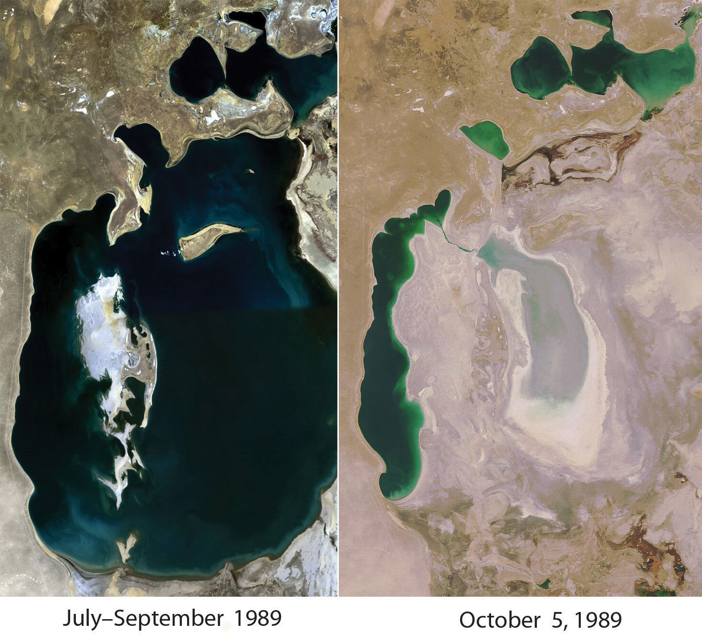These satellite images compare the Aral Sea between 1989 and 2008. The eastern region was completely dry by 2009, whereas the northern portion was responding favorably to Kazakhstan’s conservation efforts.
Source: Images courtesy of NASA and Zafiroblue05, http://commons.wikimedia.org/wiki/File:Aral_Sea_1989-2008.jpg.
To the south of the Amu Darya River is the desert country of Turkmenistan, which extends from the Caspian Sea to Afghanistan in the east. Turkmenistan is slightly larger in physical area than the US state of California. Roughly 80 percent of the country is covered by the Kara Kum Desert, which is among the driest in the world. The southern mountains along the Iranian and Afghan border reach as high as 10,290 feet in elevation. Water from the Amu Darya River has been diverted by the seven-hundred-mile-long Kara Kum Canal through Turkmenistan to help grow cotton and other agricultural products.
The transition from a Soviet republic to an independent state in 1991 brought many changes. The former leader of the Turkmen Soviet Socialist Republic, Saparmurat Niyazov, who went by the name Turkmenbashi (leader of the Turkmen people), dominated the presidency for fifteen years. Through his authoritarian rule, he promoted a traditional culture—with Islam as the predominant religion—and was notorious for developing a cult of personality. For example, he changed all the names of the days of the week and the months of the year to his name, the names of his family members, and the names of Turkmen heroes or famous people. Turkmenbashi’s image was printed on the currency, and large posters of him could be seen throughout the country. His book on important concepts, the Ruhnama (The Book of the Soul), was to be read by all schoolchildren and the public. After his death in 2006, many of his actions were reversed. The country continues to transition to a stable democratic state, though many of the same dynamics of corruption and authoritarian rule remain.
Turkmenistan is blessed with the fourth-largest natural gas reserves in the world; the top three are Russia, Iran, and the United States. The income from natural gas exports has become the country’s greatest means of gaining wealth. Because Turkmenistan is landlocked, its government has been forced to partner with Russia to use of Russia’s pipelines to export the natural gas. Not wishing to rely on Russia’s monopoly on the pipelines, Turkmenistan developed an additional pipeline to China to help boost income and profits. Many international corporations are seeking to do business in Turkmenistan and Central Asia to corner a piece of the vast natural resources. Corporate colonialism is extremely active and has contributed to a high level of corruption in the government and the business sector. It is unclear how much of the country’s wealth filters down to most of the population. Over the past decade, unemployment rates have exceeded 50 percent, and more than half the population lives below the poverty line.
The administrative center and largest city of Turkmenistan is its capital, Ashgabat, which has a population of about one million. Ashgabat lies between the Kara Kum Desert and the mountains near the former Silk Road. In the historic region of Central Asia, it is comparatively a very young town, having grown out of a small village founded in 1818. Ashgabat is primarily a government and administrative center, although it has thriving cotton, textile, and metalworking industries. Ashgabat is also a popular stop along the Trans-Caspian Railway.
Local groups in the mountains of Central Asia make up the population of Kyrgyzstan. The forty rays of sun on the country’s flag symbolize of the legendary forty tribes of Manas that represent the nation. The rugged landscape of this mountainous land includes the high ranges of the Tian Shan Mountains, which can reach elevations as high as 24,400 feet and cover about 80 percent of the country. Snowfall from the mountains provides fresh water for agriculture as well as hydroelectric energy. Food crops can be grown in the valleys and the few lowland areas. Half the population works in agriculture, and self-sufficiency in food production is a major objective for survival. The mountains hold deposits of metals and minerals that have a strong potential for adding to the national wealth. Oil and natural gas reserves are also available for exploitation. The government is seeking foreign aid and investments to help develop these resources.
In 2009, Kyrgyzstan had a population of about 5.4 million in a land area about the size of the US state of South Dakota. About 30 percent of the population is under the age of fifteen, and about 36 percent of the population is urban. The western boundary with Uzbekistan and Tajikistan is winding and creates various small enclavesTerritory of one country that is entirely surrounded by another country. and exclavesTerritory of one country that is physically separated from that country. of people from one country surrounded by people of another country and separated from their home nations.
Figure 8.64 Flag of Kyrgyzstan
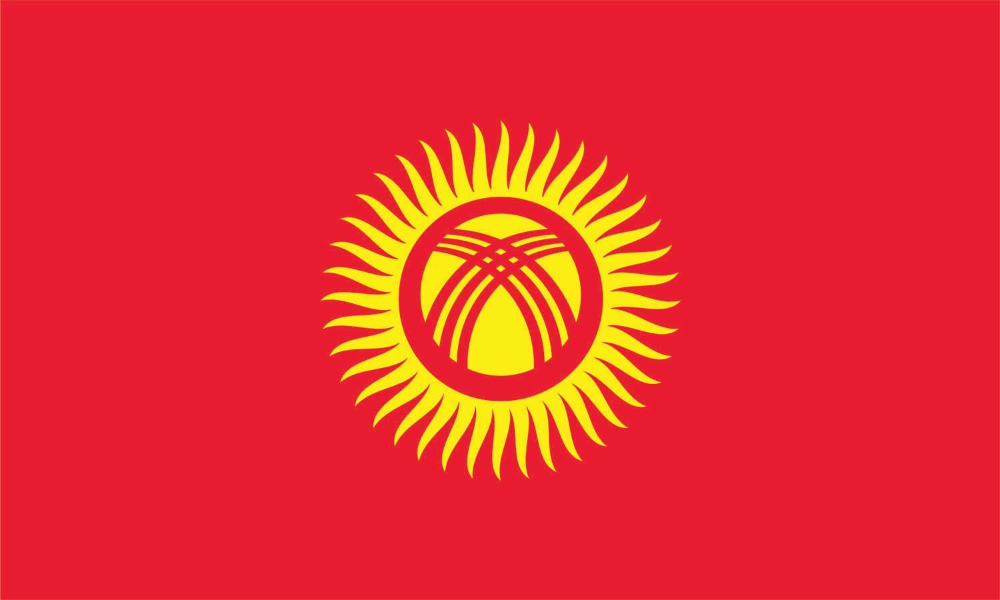The flag of Kyrgyzstan has a symbol of the sun and forty rays of light indicating the legendary forty tribes of Manas that represent the nation.
Source: Drawing by Andrew Duhan, http://commons.wikimedia.org/wiki/File:Flag_of_Kyrgyzstan.svg.
Kyrgyzstan’s transition from a Soviet republic to independence was not smooth. The loss of the state social safety net pushed the economy further to the informal sector, where trading and small transactions for personal survival are common. Shortages of consumer goods occur in rural areas and small towns. Kyrgyzstan is an isolated country that has been working to integrate itself into the global economy through technology and modernization. In 2010, clashes between Uzbeks and Kyrgyz brought about riots in the streets of major cities, resulting in more than two hundred casualties and three hundred thousand displaced citizens. After the situation cooled down, the government worked to stabilize itself with new leadership.
Figure 8.65 Base Camp on South Inylchek Glacier in the Tian Shan Mountains, Kyrgyzstan
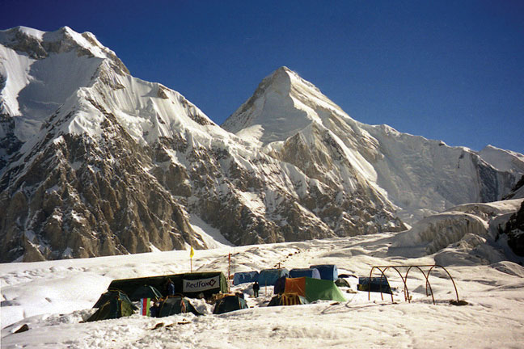The mountain in background is Khan Tengri (22,949 feet).
Source: Photo courtesy of Simon Garbutt, http://commons.wikimedia.org/wiki/File:South_Inylchek_Base_Camp.jpg.
A form of improvisational oral poetry, which allegedly dates back to more than one thousand years ago, is an aspect of traditional culture that has been preserved. While common throughout the region, it is mainly found in Kyrgyzstan and Kazakhstan. Practitioners will often engage in “lyrical battles” of folklore. These poets, often accompanied by two- or three-stringed instruments, will recite the Manas, an epic poem of Kyrgyzstan that details the life of the Kyrgyzstan hero Manas. This epic tale is a renowned part of the culture and festivals of Kyrgyzstan.
Figure 8.66 Storytelling Tradition
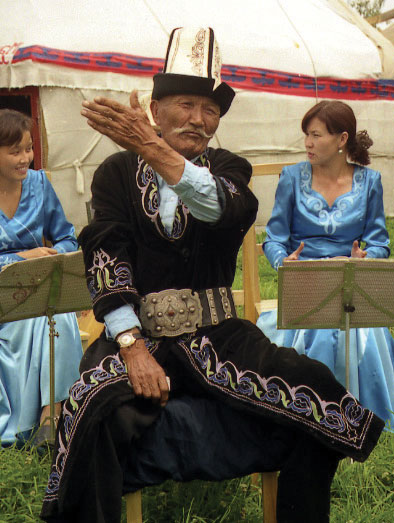A manaschi—a traditional storyteller—in Karakol, Kyrgyzstan, who has memorized entire epic legends of his history, recites the stories to others at a local festival.
Source: Photo courtesy of Simon Garbutt, http://commons.wikimedia.org/wiki/File:Kyrgyz_Manaschi,_Karakol.jpg.
The eastern region of Central Asia has some of the highest mountain ranges in the world; about 90 percent of Tajikistan is mountainous, and more than half the country is 10,000 feet in elevation or higher. Ranges of the Himalayas extend from the south all the way to the western border with China. The Pamirs is a mountain range located where the Tian Shan, Karakorum, and Hindu Kush mountain ranges meet in Tajikistan, an area referred to as the Pamir Knot, or the roof of the world. Elevations in the Pamirs often exceed 24,500 feet. The Pamirs is the source of the Amu Darya River and is home to the longest glacier outside the polar regions (forty-eight miles long in 2009). There is great potential for hydroelectric power generation, and Tajikistan is developing the world’s highest dam.
Tajikistan has the smallest physical area of any country in Central Asia but has a population of about 7.3 million. Only about one-fourth of the population is urban, and one-third of the population is younger than fifteen years of age. There is less ethnic or religious diversity; 80 percent of the people are ethnically Tajik and are Sunni Muslims. Though it has natural resources similar in quantity to those in Kyrgyzstan, Tajikistan’s economy is not advanced enough to fully take advantage of its economic potential. Half the labor base works abroad and sends remittances back to their families for economic support. Unemployment is high, and job opportunities have not been able to keep up with demand.
Dushanbe, the capital and largest city of Tajikistan, is situated on the confluence of two local rivers and is famous for its Monday markets (Dushanbe means “Monday” in Tajik). Dushanbe, like Ashgabat in Turkmenistan, was originally a small village; it became an administrative center for the region when the Soviet army conquered the area in 1929. Similar to many of the other cities and regions in Central Asia, the Soviets transformed the political and economic landscape and made Dushanbe a center for cotton and silk production. The Soviets also transformed the cultural and ethnic makeup of the city by relocating tens of thousands of people from Russia and other regions of Central Asia to Dushanbe.
The transition from a Soviet Republic to an independent country in 1991 was difficult for Tajikistan. From 1992 to 1997, a bitter civil war between regional factions killed more than fifty thousand people. Political instability and corruption has hampered the growth of a market economy, and political power remains in the hands of the economic elite. Debt restructuring with Russia and an infusion of development loans from China have aided the ailing economy. Aid from the US helped fund a thirty-six-million-dollar bridge linking Tajikistan and Afghanistan, which opened in August 2007. US aid has also contributed to infrastructure development designed to help US military operations in Afghanistan and in the region as a whole. Countries such as Russia, China, and the United States are all looking to gain an advantage with their ties to Tajikistan to exploit the region’s natural resources.
Present-day Afghanistan has been conquered by the likes of Genghis Khan, Alexander the Great, and the Mogul Empire and was a buffer zone for colonial feuds between Russia and British India. The high central mountain range of the Hindu Kush dominates the country and leaves a zone of well-watered fertile plains to the north and a dry desert region to the south. Afghanistan is a remote region without access to the sea and acts as a strategic link between the Middle East and the Far East.
Figure 8.67 Afghanistan
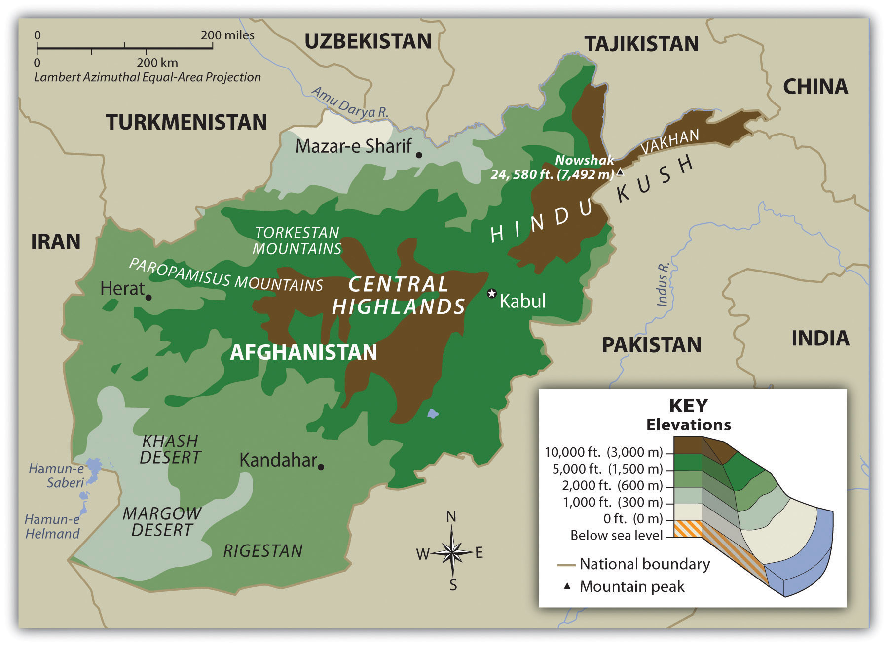Kabul is the capital, and the southern city of Kandahar is the second-largest city.
Source: Map courtesy of CIA—UT Austin Map Library, http://www.lib.utexas.edu/maps/middle_east_and_asia/txu-oclc-310605662-afghanistan_rel_2008.jpg.
In 1979, the Soviet Union took advantage of ongoing ethnic warfare in Afghanistan to inject itself into the country. The Soviets pushed in from the north and occupied much of Afghanistan until they completely withdrew in 1989. During the Soviet occupation, the United States supported anti-Communist resistance groups such as the MujahideenMuslim fighters at war with those who attack or threaten their beliefs. with money, arms, and surface-to-air missiles. The missiles were instrumental in taking out Soviet aircraft and MiG fighters, which caused a critical shift in the balance of power in the war. One of the major connections between the for the Central Intelligence Agency (CIA) and Mujahideen was a Saudi national named Osama bin Laden. Support from the CIA through bin Laden to the Mujahideen was instrumental in defeating the Soviets.
The power vacuum left by the retreating Soviets allowed conflicts to reemerge between the many ethnic factions in Afghanistan. Dozens of languages are spoken in Afghanistan; the top two are Pashtu and Afghan Persian-Dari. There are also a dozen major ethnic groups; the top two are Pashtun and Tajik. The groups regularly fight among themselves, but they have also been known to form alliances. Rural areas are usually led by clan leaders who are not part of any official arm of a national government. Afghanistan is a place where forming any national unity or identity is not easy. The national government in the capital city of Kabul has little influence in the country’s rural regions.
The Soviet invasion brought the internally warring factions together for a short period to focus on the Soviet threat. Chaos and anarchy thrived after the Soviet forces withdrew, but the Islamic fundamentalist group known as the TalibanMilitant Islamist group in Afghanistan that took control of the central government in 1996. came forward to fill the power vacuum. One objective of the Taliban was to use Islam as a unifying force to bring the country together. The problem with that concept was that there was much diversity in how Islam was practiced by the numerous local groups. Many of the factions in Afghanistan opposed the Taliban; one such group being the Northern Alliance, which was an association of groups located in the northern portion of the country. The civil war between the Taliban and those that opposed them resulted in the deaths of more than fifty thousand people by 1996 when the Taliban emerged to take power in Kabul. The Taliban is a Sunni Muslim group that adheres to strict Islamic laws under the Wahhabi branch of the faith similar to that of Saudi Arabia. Under Taliban rule, women were removed from positions in hospitals, schools, and work environments and had to wear burkas (also spelled burqas) and be covered from head to toe, including a veil over their faces. Violators were either beaten or shot. The Taliban brought a sense of militant order to Kabul and the regions under their control. Various factions such as the Northern Alliance did not share the Taliban’s strict Islamic views and continued to oppose their position in power.
After the war against the Soviet Union was over, the US role in Afghanistan diminished. The groups that the United States had supported continued to vie for power in local conflicts. Osama bin Laden remained in Afghanistan and established training camps for his version of an anti-Western resistance group called al-QaedaAnti-Western terrorist group founded by Osama bin Laden.. Just as he had opposed the Soviet Union, he now opposed the United States, even though the United States had supported him against the Soviets. The Saudi government allowed the United States to establish military bases in Saudi Arabia during Operation Desert Storm in the Persian Gulf War, and this was one reason for bin Laden’s opposition; he believed that non-Muslims should not be on the same ground as the Muslim holy sites of Mecca and Medina.
The 9-11 attack in New York City was traced back to al-Qaeda and bin Laden, who was residing in Afghanistan at the time. In a military action dubbed Operation Enduring FreedomUS war on terrorism around the world, which included the US invasion of Afghanistan to remove al-Qaeda in 2001., the United States invaded Afghanistan in 2001, removed the Taliban from power, and dismantled the al-Qaeda training camps. Although bin Laden escaped, the terror of the Taliban was temporarily reduced. Women were allowed to return to the workplace, and the rebuilding of the country became a priority. The country was devastated by war and is divided by the human geography because of the various ethnic and traditional groups. Afghanistan is one of the most impoverished places on Earth. The armed conflicts in Afghanistan did not end with the US invasion. After regrouping, the Taliban rallied its supporters on the Pakistani side of the border and returned to the fighting front in Afghanistan against North Atlantic Treaty Organization (NATO) and US forces.
Figure 8.68 Propaganda Poster in Afghanistan with Image of Osama bin Laden
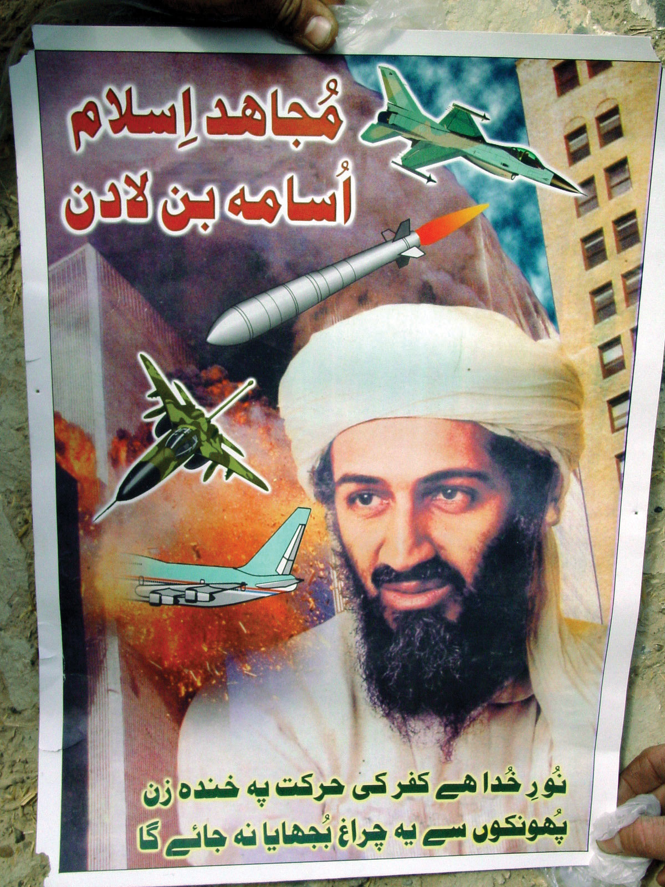Osama bin Laden was killed by US Navy Seals in 2011.
Source: Photo courtesy of the US Department of Defense.
Fighting between Western forces and the Taliban in Afghanistan continued to provide the exiled bin Laden a platform to promote his al-Qaeda terrorist activities from his hiding place. Efforts to locate and marginalize bin Laden continued through to the US presidency of Barack Obama. In May of 2011, on orders from President Obama, a team of US Navy Seals were sent into the city of Abottabad, Pakistan, to a private compound where intelligence indicated that bin Laden was hiding. In the confrontation, the US Navy Seal team killed bin Laden. The entire operation was conducted without the awareness of the Pakistani government. This event may have impacted al-Qaeda but has not likely diminished the fighting in Afghanistan.
The country is the world’s largest producer of opium, a product extracted from a poppy plant seedpod that can also be refined into heroin. The expanding poppy cultivation as well as a growing drug trade may account for one-third of the country’s income. More than 80 percent of the heroin consumed in Europe is grown in Afghanistan. The drug trade has only multiplied the problems in this devastated country. Prudent and effective methods for the government to address the drug trade are matters for debate and negotiation. Most of the country is ruled by warlords and clan leaders who have few resources other than tradition and custom. Afghanistan’s infrastructure has been destroyed through warfare, and its government is dependent on foreign aid; without it, this country cannot recover to integrate itself with the global economy. Central Asia has enormous oil and natural gas reserves, and the core economic regions of the world will continue their work to extract these resources for economic gain.
The US Department of Defense issued an official statement on Afghanistan in 2008 (Source DoD 2008):
In response to the events of September 11, 2001, the U.S. and its allies launched an invasion of Afghanistan to overthrow the Taliban regime and destroy the al-Qaeda terrorist network it supported. In the years since, the International Security Assistance Force, under NATO leadership, has taken charge of extensive provincial reconstruction and stabilization efforts, helping set the economic, political and security conditions for the growth of an effective, democratic national government in Afghanistan. As the lead member of the international coalition, the U.S. contributes troops to both the ISAF [International Security Assistance Force] mission and Operation Enduring Freedom, tasked with pursuing al-Qaeda throughout Afghanistan’s inhospitable border region with Pakistan.
The Western military troops aligned themselves with Afghan groups such as the Northern Alliance to defeat the Taliban and remove the al-Qaeda presence.
Figure 8.69 Operation Enduring Freedom in Afghanistan
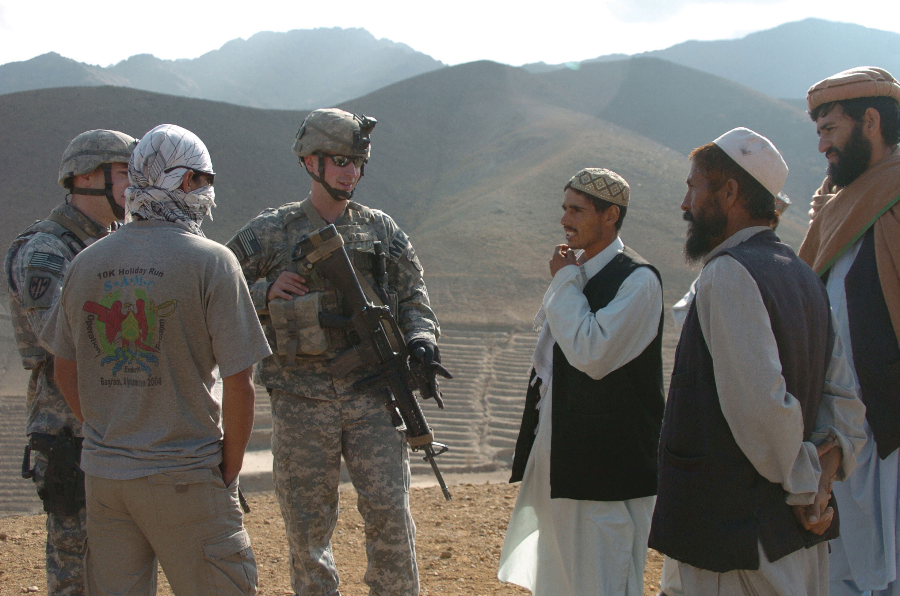Competing groups and the rough terrain make keeping the peace in Afghanistan difficult. The United States turned control over to NATO in 2006. In this photo, soldiers representing the 561st Military Police Company, Fort Campbell, Kentucky, are speaking with local Afghans about insurgent activity near Bagram, Afghanistan.
Source: Photo courtesy of the US Department of Defense, taken by Dexter D. Clouden, Sgt. 1st Class, 2006.
Figure 8.70 Voting in Afghanistan
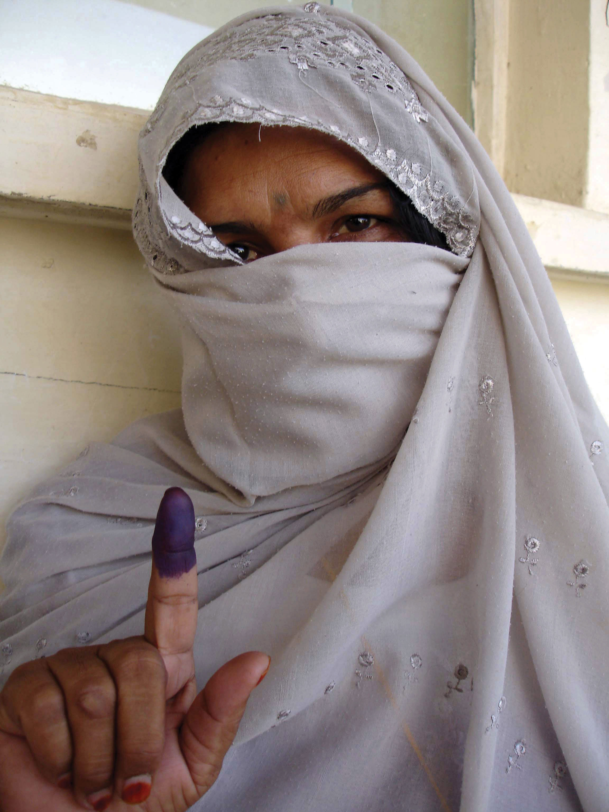After voting in Afghanistan, individuals dipped their fingers in ink to indicate they had voted and were not allowed to vote more than once. This photo indicates that women were also allowed to vote in Afghanistan in the 2005 elections for provincial councils and parliamentary positions.
Source: Photo courtesy of the US Department of Defense, taken by Staff Sgt. Jacob Caldwell, 2005.
Democratic elections were held for the office of president in Afghanistan beginning in October of 2004. Hamid Karzai was the country’s first elected president in the twentieth century. He was reelected as president in 2009 under the cloud of claims of election fraud. The right to vote was restored to women in the 2004 election. To combat voter fraud, people would dip their fingers in ink to indicate they had voted and to ensure they did not vote more than once. Voting has not been a smooth process because democratic rule is new to Afghanistan. Afghanistan’s future is insecure. Most of Afghanistan is still ruled by warlords and clan leaders. The Taliban has sustained its support in Afghanistan from bases on the Pakistani side of the border, and United Nations (UN) and NATO troops continue to confront the Taliban and work toward stability. Kandahar, the second-largest city in Afghanistan, is located in the south, an area where support for the Taliban is stronger than it is in Kabul in the north.
In 2010, a US government report indicated that vast amounts of mineral wealth were discovered in Afghanistan by American geologists and Pentagon officials. Enormous deposits of iron, copper, gold, cobalt, and rare industrial minerals such as lithium are reported to be present in Afghanistan. Total reserves are unknown or have not been released but if extracted would result in trillions of dollars of economic gain for the country. Lithium is highly sought after and is used in the manufacturing of batteries, computers, and electronic devices. The report indicated that Afghanistan could become the world’s premier mining country.
Figure 8.71 Vastness of Afghanistan
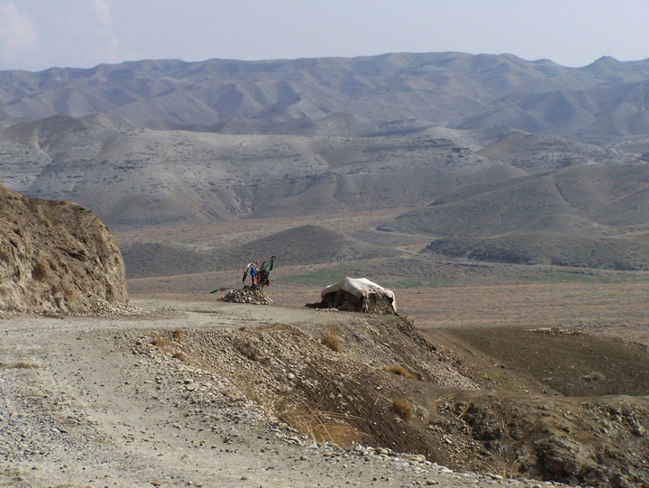In this photo is the Lataband Road between Kabul and Surobi. The dry, treeless expanse of this region is home to Afghanistan’s vast mineral wealth.
Source: Photo courtesy of Sven Dirks, http://commons.wikimedia.org/wiki/File:Lataband_Road_hut.jpg.
Discovery of vast resources helps place the war in Afghanistan in perspective with respect to global competition over the control of resources. It has been reported that China has already offered millions of dollars in incentive money to Afghan government officials to allow its country to mine copper. Bribery and corruption in the Afghan government is a serious impediment to a stable political environment, but criminal activities are projected to persist and swell with the potential for additional mining wealth. Afghanistan does not have a long-standing tradition of mining. Agriculture has been the main focus of economic activity for the rural communities. A newfound potential for mineral wealth will change the future of Afghanistan. It will be interesting to watch how Afghanistan adapts to and benefits from the discovery of previously unknown resources.
The following is a summary of trends in Central Asia:
Identify the following key places on a map: